『アルバート片道冒険記』
このテキストはツイッターゲーム『片道勇者オンライン(ｳｪﾌﾞｱｰｶｲﾌﾞ)』におけるSmokingWOLFのプレイログ『アルバート片道冒険記(togetter)』を再編集したものです。ツイッターゲームとは、診断アプリで出たランダムイベントをこなし、サバイバルしたり物語を紡いでいくゲームです。
「診断」をすると、たとえば「アルバートは崖から落ちたが美人の耳長に救われた。仲良くなってＬＰ－５、伝説Ｐ＋３」といったランダムなイベント内容が出るので、それをツイッターに投稿して数値を反映し、描写を付けたりしてゲームを進めていきます。
（2025/07/10追記：診断に使用していた『アプリメーカー』のサービス終了により、現在はプレイできません）
今回は、シルフェイドシリーズや片道勇者プラスなどでおなじみの『アルバート』というキャラクターで冒険を行います。異世界を巡るアルバートの物語、ぜひお楽しみください。
【はじめに】
| 【アルバートから一言】
俺の名はアルバート。異世界から来た傭兵だ。元の世界に戻るための旅をしながら、なぜかたまに世界や人類を救う手伝いをしている。
『片道勇者オンライン』のプレイ見本となるべくプレイしていくつもりだ、よろしく頼む！ |
| 【種族選択中】
片道勇者オンラインでは、まずキャラクターの種族を選ぶ。俺の種族は当然「人間」だが、突然『闇』の影響で「半獣人」になったという設定も面白いかもしれんな。
「獣人」や「耳長人」になる理由があるとすれば……冒涜的な種族に脳を入れ替えられたとか、義体を換えたとか……ってそれ別のTRPGだぞ！ いちおうコレ片道勇者TRPGの販促用ゲームだからな！ |
◆クリックで拡大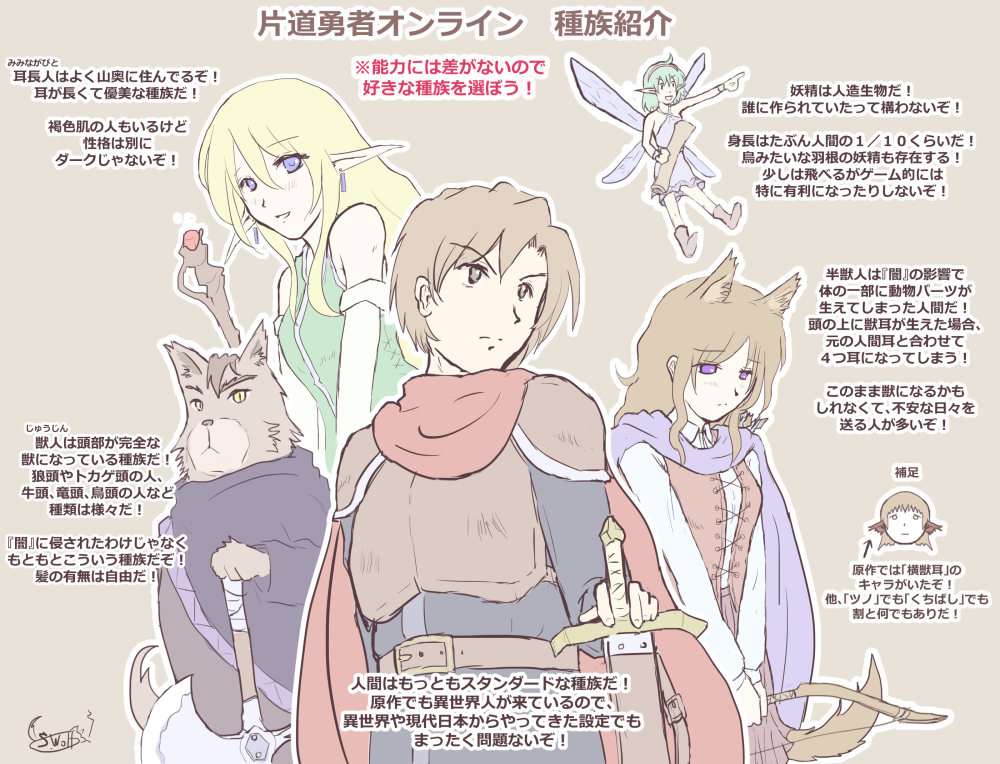
{kind=link}
| 【アルバートから一言】
さて、ここからは俺の視点で物語が進んでいく。これらは、ツイッターに投稿していた内容を編集したものだ。
ちなみに俺は、『片道勇者プラス』の冒険を終え、『時の扉』で飛んできた直後という設定で冒険が始まっている。それでは、楽しんでくれ！ |
【始まり】
最後の『時の扉』を通り抜け、やって来た先はここだった。そこは前回と全く同じ、闇に覆われつつある世界だった。
「最近の世界は闇に追われるのがトレンドなのか！？」
そうぼやきながら俺は武装を確認した。長銃の弾はもうなくなっている。手持ちの武器は短剣一本だけだ。
武器は貧弱だが命の心配はしていない、俺だって《◆強打》くらいは扱える。この技をよく使ったのは過去の浮遊島の冒険だ。今では遠い過去の記憶だ。
他には、地味だが機械いじりも得意だ。家の鍵をなくしても自力で鍵を開けられる程度には《◆開錠》能力もあるぞ。
……というようなことを酒場で話すと、ウェイトレスにこう言われた。
「君、海賊？」
「眼帯を付けてるだけで海賊扱いとは偏見だぞ」
「えー、強打ができて鍵開けもできるなら立派な海賊よ～」
マジか。だが郷に入れば郷に従えだ。こうして俺は何となく『海賊』を名乗ることになった。
『闇』は今も休むことなく、おおよそ人が歩くのと同じ速度で東へ進み続けている。俺はこの『闇』から逃げながら世界を旅し、そして同時に『闇』を何とかする手段を探し出さねばならない。それが勇者候補としての使命だ。
俺の他にも、たくさんの勇者候補の仲間たちがいる。時には、手助けし合う必要もあるだろう。
| 【アルバートから一言】
ということで、これが『海賊』として始めることになった俺のキャラクターシートだ。年齢は覚えてないぞ！ 中の人は片道勇者の原作者なので「イメージと違う」というツッコミは受け付けない！ では、冒険の始まりだ！
|
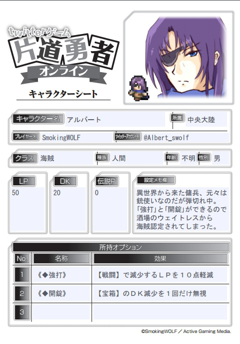
| 【アルバートのTIPS】
なお、開始時にはスタート地点となる初期大陸を選べるのだが、俺は「中央大陸」にした。
今から始める場合は北大陸、中央大陸、南大陸の３つから選べるが、当時は中央大陸と南大陸しかなかったんだ。 |
【1日目】
【中央／入手／探索1】 アルバート＠中は静かな遺跡で妖精の亡骸を見つけた。君は短く祈りの言葉を唱え、その人物の形見を拾い上げた。《癒しの草》を取得してよい。 |
俺が降り立った場所は「中央大陸」と呼ばれる大地だった。街から出ると、すぐに静かな遺跡群に入った。崩れかけた石の遺跡を少し進んだとき、俺の左目が何かを捉えた。人が落ちている……！？
うっかり見逃しそうになったほど小さい“それ”は、小さな「羽根の生えた人間」だった。
「おい……大丈夫か？」
声をかけてみるが反応はない。恐る恐るその体を仰向けにしてみると、小さな少女はすでに息をしていないことが分かった。外傷はない。街まであと少しなのに、たどり着けずに力尽きたのだ……。
俺は遺跡の隅に、この少女のための小さな墓を作ってやることにした。
「《癒しの草》、使わなかったのか……」
もしかしたら届け物だったのかもしれないそれは、最後まで使われることなく彼女の手元に残っていた。
俺は彼女の生真面目さを小さく嘆いて、その場を後にした。ここで出会った妖精の少女の記憶は、きっとこれからも俺の中で生き続けるだろう……。
◆選択 → 形見を拾い上げて《癒しの草》を入手
【ｽﾃｰﾀｽ】 LP：50 DK：20 伝説P：0
【ｵﾌﾟｼｮﾝ】 《◆強打》 《◆開錠》 《癒しの草》 ←New!
【ｽﾃｰﾀｽ】 LP：50 DK：20 伝説P：0
【ｵﾌﾟｼｮﾝ】 《◆強打》 《◆開錠》 《癒しの草》 ←New!
| 【アルバートのTIPS】
いきなり悲しい始まりになってしまったが、これが片道勇者オンラインの遊び方の例だ。ランダムで出てきた診断に従ってパラメータやオプション（アイテム）の増減を行い、さらにお好みに応じて「描写」を付けたりして楽しむわけだな。
俺の場合は、主に描写部分を楽しんでもらうことになるだろう。 あと「アルバート＠中」というのは「俺が中央大陸にいる」ということを表した名前だ。ゲーム中はこれで自分の居場所を表明するわけだな。 |
【2日目】
【中央／入手／探索1】 若い旅人と話し、アルバート＠中は初心を思い出した。君のクラスの《初期オプション》の中から好きなものを1つだけ取得してよい。例：冒険家なら《◆ジャンプ》か《◆開錠》のどちらか1つ。 |
「やあ、君も旅の人？」
夜空の下、冒険初心者といった風体の男が言った。俺より若い。この闇に追われ、旅に出ざるを得なくなったのだろうか。
「これからなんとか生きる術を身に付けなきゃいけなくてね……大変だよ」
俺は……彼を手助けしてやりたくなった。
そこで俺は彼に一つの技を教えることにした。
「強打とは！ こうやって放つのだ！」
「いきなり無理だって！」
その後も彼に技の真髄を理解させようと必死になっているうちに、俺は傭兵になりたての頃を思い出した。あの頃もこうやって指導されていたな……。
俺は彼を疲れさせたおかげで《◆強打》の打ち方を思い出した。彼は疲れ損だ。すまん、若い旅人……！
そのせいでオプション（所持品）がいっぱいになったので、妖精の少女の形見のつもりで大事に持っていた《癒しの草》をむせび泣きながら食った。若い旅人にドン引きされた。
◆選択 → ※妖精の形見として持っていた《癒しの草》を泣く泣く使用してLP+5
【ｽﾃｰﾀｽ】 LP：50→55 DK：20 伝説P：0
【ｵﾌﾟｼｮﾝ】 《◆強打》 《◆開錠》 《◆強打》←追加
【ｽﾃｰﾀｽ】 LP：50→55 DK：20 伝説P：0
【ｵﾌﾟｼｮﾝ】 《◆強打》 《◆開錠》 《◆強打》←追加
| 【アルバートの感想】
ゲームの説明だが、LPは「生命力」、DKは「闇からの距離」を示している。LPかDKが0になると死亡した扱いとなる。もっとも、死亡しても伝説Ｐを10点減らせばそのまま次の日に転生することが可能だ。
|
【3日目】
【街／入手／伝説Ｐ＋1】 「わがはいは道具屋である、名前はまだない」 アルバート＠中は倒錯気味な道具屋に出会った。望むなら伝説Ｐ－3で、最後の商品である《周辺の地図》を取得できる。でなければＬＰ＋3。 |
俺は2日ぶりに街へ来た。何となく道具屋に向かう。
「フヒッ、この《周辺の地図》はよいものである。味も最高！（ベロベロベロ） いる？」
「すまん金がなかった」
俺は慌ててそう答え、売り物の舌触りを確かめている倒錯気味な道具屋と別れた。ダッシュで。
しかし街に来て何もしないというのも損だ。俺は人々に話を聞きつつ、体を休めることにした。
ちなみに「伝説Ｐ」は街に来ると勝手に増える。資産や名誉の増加だけでなく、交流で住人とのコネができることなども伝説Ｐに含まれるのだろう。
◆選択 → 商品を買わず、LP＋3。
【ｽﾃｰﾀｽ】 LP：55→58 DK：20 伝説P：0→1
【ｵﾌﾟｼｮﾝ】 《◆強打》 《◆開錠》 《◆強打》
【ｽﾃｰﾀｽ】 LP：55→58 DK：20 伝説P：0→1
【ｵﾌﾟｼｮﾝ】 《◆強打》 《◆開錠》 《◆強打》
| 【アルバートの感想】 今日は変な商人だったが、次はまともな者に出会いたいものだ。俺の主人公力なら「美しい少女」などとの出会いがあってもおかしくないはず……明日こそよき出会いに期待だな！ どちらかというと俺は女は苦手だがな！ しかし倒錯気味な道具屋よりはだいぶマシだぞ！ 生きてる妖精でもいいんだ！ 頼む神様！ |
【探索レポート】
| 【アルバートから一言】
「片道勇者オンライン」ではイベント中、皆の診断で得た「探索点」の総量に応じて、定期的に大陸ごとの新たな事実が明らかになったり、物語が進むようになっている。
さて、最初のレポートは……。 |
https://twitter.com/owh_online/status/743812613599944704
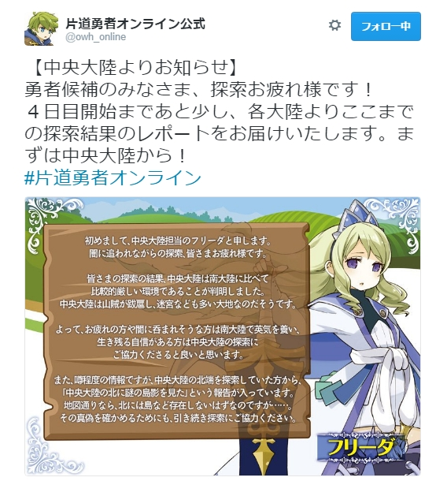
| 【アルバートから一言】
見ろ、希望通り美少女が来たぞ！ 違う、あれがフリーダ王女か！ 少女といっていいのかやや悩むな！ 中央大陸は南大陸より少し難易度が高いようだが、「北に見える謎の島影」というのは気になるところだ。
|
https://twitter.com/owh_online/status/743813302795395072
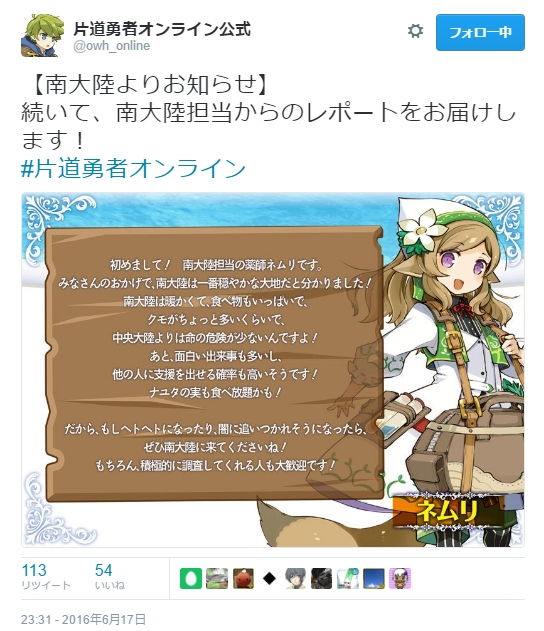
| 【アルバートから一言】
南には行ってないから分からないが、主な危険はクモ程度らしいな。南はバランス面でやさしいらしいので、療養するならここだ！ 不幸なヤツは知らん！
あとネムリ嬢のたくましい尻尾に俺は興奮しているぞ！ |
【4日目】
【街／交流／伝説Ｐ＋3】 闇が迫る中、アルバート＠中は賭場を見つけた。そこで君に恋した亡国の姫と出会う。一緒に賭けを楽しんでいくならＤＫ－7、伝説Ｐ＋6。先を急ぐならＬＰ＋3、ＤＫ－1。 |
俺は街にもう1日滞在することにした。歩いていると、薄暗い賭場の入口を見つけた。中は盛り上がっているようだ。もうすぐここも闇に呑まれるというのに呑気なものだ……いや、まもなく呑まれるからこそ、最後まで人生を楽しむつもりなのか。それはそれで感心だ。
そう思いながら眺めていると、賭場と俺を交互に見ている女を見つけた。美しく身なりもいい。
「ここはキミが来るような場所じゃないぞ」
「お願いがあるんです。その、一緒に、入っていただけませんか……？」
賭場に！？ 聞けば彼女は西の国の姫だったという。
「最後の思い出にと思ったのですが、一人では不安で…」
俺が人助けをする人間に見えるとでもいうのか。むろん俺は承諾した。捨てられた子犬のような瞳に負けた！ くそ！
結局、俺と姫は賭博を楽しんだ。姫は強かったが、それ以上に俺と話すことが楽しそうだった。
俺は薄々、気付いていた。この亡国の姫は、たぶん俺と話したいがために「賭場に入りたい」と言ったのだと。
「ありがとう、いい思い出ができました……アルバート様、あなたの無事を祈っています」
「……ああ」
それだけ言って俺たちは別れた。辛い、別れだった。
◆選択 → 賭けを楽しむ。伝説Ｐ＋9、ＤＫ－7
【ｽﾃｰﾀｽ】 LP：58 DK：20→13 伝説P：1→10
【ｵﾌﾟｼｮﾝ】 《◆強打》 《◆開錠》 《◆強打》
【ｽﾃｰﾀｽ】 LP：58 DK：20→13 伝説P：1→10
【ｵﾌﾟｼｮﾝ】 《◆強打》 《◆開錠》 《◆強打》
| 【アルバートの感想】 ようやくまともな者と出会えた、しかも美女だ……でもな、別れる運命しかないんだ……くっ、うっ……。 |
・
・
| 【さっきの姫について】
他のプレイヤーから「伝説Ｐでオプションを買って仲間にしたことにするのはどうか」という案をいただいた。なるほどそういうプレイをするのは素敵だな！
だが俺の伝説Ｐ１０点だと姫を《仲間：頼れるペット》にするしかなくて背徳感がかなりヤバいぞ！ |
・
・
・
| 【２択アンケート】
俺の中ではいまだに葛藤が続いている。そこで「君に恋した亡国の姫」を《仲間：頼れるペット》として仲間に加えるか否か、皆にアンケートだ！ 詳しい顛末を知りたければ、すぐ上の流れを見てくれ！
|
↓ アンケート結果
https://twitter.com/Albert_swolf/status/743851806439071744
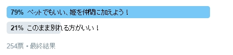
| 【仲間にするかアンケート結果】
おまえら……姫をペットにしたいヤツが約80％って多すぎだろ！
なに？ 純粋に仲間にしたいって？ くそっ、俺は騙されんぞ、変態どもめ！ しかしアンケート結果がこうなってしまってはしょうがないな！ その気はなかったが俺は姫を仲間（ペット）にするぞ！！ |
【描写】
別れた後も、あの姫のことが気になった。彼女は闇に呑まれるだろう。
今の俺にだって、ペットを一匹仲間に引き入れるくらいの勇者的度量はある。だがそれ以上はない。
必死に考えた末、俺は名案をひらめいた。そうか、彼女を『ペット』にすればいいんだ！
3秒ほどして、姫をペットにするというよこしまな発想に後悔が押し寄せた。俺は一体何を考えているんだ……！
だが選択肢は二つ、素直にここで別れて彼女を失うか、ペット扱いでも連れていくか、だ……。
俺は腹を決めて歩き出した。そう、姫のいた場所へ。
俺は姫の目の前に来ていた。
「君を迎えに来た」
「えっ……アルバート……様……！？」
姫は口を押さえて目をうるませた。いや待ってくれ、感動シーンじゃないんだ。
俺はゆっくりていねいに土下座をして、こう叫んだ。
「俺のペットになってくれ！！！」
空気が凍り付いた。通行人達が俺を見ている。違う、これは読者の民主的総意なんだッ！ と心の中で言い訳をしながら返事を待った。
「……私がペットになれば、あなたと共にゆけるのですね？」
姫は俺にとって一番都合のよさそうな解釈をして、俺の手を取った。
「私も、今では捨て犬のような弱き身……どうか私を拾ってください、アルバート様……」
こうして姫は、《仲間：頼れるペット》として同行することになった。いつか人間扱いするから、伝説Ｐがたまるまで待ってくれ、姫よ……！
なお、彼女の名はコナ王女というらしい。
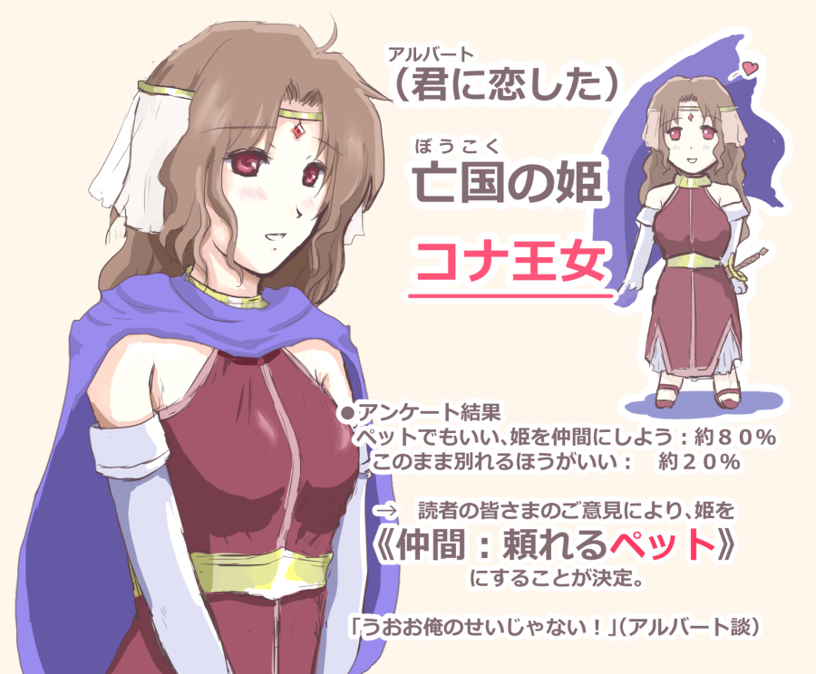
{kind=link}
◆選択 → 《◆開錠》を捨てて、伝説Ｐ １０で《仲間：頼れるペット》（コナ王女）を獲得
【ｽﾃｰﾀｽ】 LP：58 DK：13 伝説P：10→0
【ｵﾌﾟｼｮﾝ】 《◆強打》 《◆強打》 《仲間：頼れるペット》
【ｽﾃｰﾀｽ】 LP：58 DK：13 伝説P：10→0
【ｵﾌﾟｼｮﾝ】 《◆強打》 《◆強打》 《仲間：頼れるペット》
| 【アルバートの感想】 《◆開錠》廃棄……いや使用といった方がいいかもしれん。そう、開けてしまったのは俺の『常識の扉』だ！ 俺は『常識』の向こう側へ行くぞ……！！ それにしても、《仲間：頼れるペット》を「人間含む」としておけば、救いたい者を（ポイント的に）ペットにせざるを得ない者が現れて笑える展開になるだろうと思っていたが、まさかその早々の被害者が俺だったとはな！ ああ！ |
【5日目】
【中央／交流／探索4】 アルバート＠中は道に詳しい病弱な老婆に出会った。楽に進める道を教えてもらうことでき、ＤＫ＋4。誰かの支援を得られれば一度だけＤＫ＋2。 |
闇がだいぶ近くなってきたので、俺たちは街を出た。ペットにしたコナ王女は足手まといになるのではと思ったが、予想に反して非常に健脚であった。彼女に足りなかったものは、ただ『生きる目的』だけだったのだ……。
道を進むと、道ばたに老婆が腰かけていた。
「ご老体、大丈夫か？」
コナ王女の前なのでいい格好をしたいのもあり、俺は老婆に声を掛けた。
老婆は病弱そうで、もう歩ける様子ではない。
「あたしのことは気にせんでいいよ……道は分かるけどもう体がダメでねえ。道を教えてやるからお二人は先を急ぎなさい」
続けて、老婆はコナ王女を見てこう言った。
「おやおまえさん、もしかして高貴な出自かい？」
「わ……私はアルバート様のペットだワン♪」
コナ王女のペットのロールプレイが炸裂し、俺と老婆は凍り付いた。両手を丸めてかわいく言ってもダメだ。この瞬間、俺は少し死にたくなった。
「コナ王女……ペットになってくれといったがそこまでは求めてない」
「ペット！？」
老婆が驚いた。
「あ、ごめんなさい……こういう役を求められているのかと」
「二人ともマニアックだねえ……あたしにもあったよ、素肌にエプロンとか」
「話を膨らませるんじゃなーい！」
俺たちは老婆に別れを告げて歩き出した。
「すごく……恥ずかしかったです……」
離れた後、コナ王女が消え入りそうな声で言った。そんな恥ずかしいのにやったのか！
だが俺もこういう状況下で変なことをしてしまった経験があるので、その気持ちはよく分かった……。
教えられた道を歩いていると、途中で別の勇者候補に出会った。行き先が同じということでしばらく一緒に進む。
途中で出会った障害を皆で協力して克服することができ、予定よりもだいぶ歩みがはかどった。次の地まであと少しだ！
「感謝する！ また会えるといいな！」
俺はそう言って手伝ってくれた勇者候補の者と別れた。
◆選択 → 支援をもらい、ＤＫ＋6
【ｽﾃｰﾀｽ】 LP：58 DK：13→19 伝説P：0
【ｵﾌﾟｼｮﾝ】 《◆強打》 《◆強打》 《仲間：頼れるペット》＝コナ王女
【ｽﾃｰﾀｽ】 LP：58 DK：13→19 伝説P：0
【ｵﾌﾟｼｮﾝ】 《◆強打》 《◆強打》 《仲間：頼れるペット》＝コナ王女
| 【アルバートの感想】 コナ王女がペットのロールプレイしてて引く。俺が悪かった、許してくれ……。 |
【6日目】
【街／交流／伝説Ｐ＋4】 君に恋した老婆に誘われて入ったのは拳闘場だった。アルバート＠中も試合に参加するならＬＰ－7、ＤＫ－4して伝説Ｐ＋5し、老婆に感激される。見物だけならＤＫ－2。 |
| 【アルバートの感想】
また老婆だと……！？ しかも恋までされている！？
なら、前回の老婆をそのまま連れてきたことにするか……。 |
昨日会った病弱な老婆だが、実はいま俺に背負われている。あの後、やはり見捨てられなくて老婆を助けてしまったのだ。闇に追われながら全ての人間を助けていては俺が持たない、と分かっていてもだ！ くそ！
コナ王女は俺の背の老婆をうらやましそうに見ていた。
老婆は道中、何度も下ろせと言ったが、街に着く頃にはなぜか俺に積極的にアプローチしてくるようになっていた。
「死んだじいさんみたいだね、あんた……惚れてもいいかい？」
「やめてくれ」
コナ王女のトゲトゲしい視線が突き刺さる。もうヤだこの状況……。
「ねえ、あんたの戦う姿が見てみたいんだけどねえ」
街に着いて、老婆が指さした先は拳闘場だった。俺の路銀も『名誉』も完全に尽きている。悪くはない。
「いいだろう、俺の強さを見せてやる！」
老婆のいいなりになる俺を、王女はやりきれない目で見ていた。
拳闘場では、二人の声援を受けながら次々と参加者を倒し、2位まで上り詰めたところで負けた。金的は反則だろ！ おムコに行けなくなっちゃう！
股間をおさえながら医務室から帰って来る頃には、老婆とコナ王女はいつの間にか仲良くなっていた。女はわからん……。
こうして俺達は拳闘場を出た。
「じいさんとデートしたときを思い出して楽しかったよ……あたしは今度こそここでお別れさね。二人とも元気にやるんだよ」
「ご老体……」
「おばあさん……」
俺たちは三人で一度抱き合い、そして別れた。別れた後で、俺は泣いた。
◆選択 → 拳闘場でＬＰ－7、ＤＫ－4、伝説Ｐ＋4＋5
【ｽﾃｰﾀｽ】 LP：58→51 DK：19→15 伝説P：0→9
【ｵﾌﾟｼｮﾝ】 《◆強打》《◆強打》《仲間：頼れるペット》＝コナ王女
【ｽﾃｰﾀｽ】 LP：58→51 DK：19→15 伝説P：0→9
【ｵﾌﾟｼｮﾝ】 《◆強打》《◆強打》《仲間：頼れるペット》＝コナ王女
| 【アルバートの感想】 必殺二連続老婆！ 三連続老婆だけはやめてくれ、ランダムの神様！ |
【6日目 支援】
| 【アルバートから解説】
片道勇者オンラインでは他のプレイヤーの診断に「支援を得られれば」といった文言があった場合、こちらから支援の手を差し伸べることができる（場合もある）！
見ろ、どこかで見た気がする獣人の狩人が山賊に捕まったようなのでさっそく助けに行くぞ！ |
↓
|
【中央／危機／探索3】 ※これは猫獣人ンクの出した診断である
目が醒めると、ンク＠中はまじめな山賊たちに拉致されていた。なんたる屈辱！ 何とか脱出できるがＤＫ－５、伝説Ｐ＋３。海賊の支援を得られれば一度だけＤＫ減少を２軽減。 |
| 【診断結果に対するンクのコメント】
山越え中にうっかりブービートラップにひっかかってしまったけどこのヒトたち、指南書を見ながら拘束・尋問をしようとしてる！
たどたどしくて見ていられない！ 縄抜けして「ちょっと！ 尋問のやり方はそんなんじゃだめ！ 教えてあげるからそこに座りなさい！」と一喝。 成り行きでこのまじめ人間たちに拷問のイロハを教えることになってしまったけど、模擬とはいえこんな素人たち相手に荒っぽいことはしかねるよね。 どこかに武術の心得があって色々試してもいいヒトはいないかなあ……。 |
| 【アルバートからのメッセージ】
＠ンクさんへ：
こちら（自称）海賊だ、支援します！ 「助けに来たぞ！」バァン！（ドアを蹴破る音） |
| まさに天の助け。ペットとして女の子を連れ歩いている怪しいヒトが現れた！ 「ちょっとそこのお兄さん！ 助けると思って模擬拷問に付き合ってください！ このひとたちまじめすぎて見てられないんです！ |
|
「アーッ！！」
山賊に捕まっていた獣人女を支援してみたら、なぜかその女に拷問にかけられた。 何を言ってるか分からないと思うが俺も何をされたのか分からなかった……少し興奮しちゃったとかそんなことは絶対にないぞ！ ないからな！ |
| こうして、意外に普通のヒトだったアルバートさんのおかげでマジメ山賊団たちに効果的な拷問の仕方を教えることができた。 この大変な時代のなか、どうか世のため人のためになるような拷問をしていってほしい。彼らにはそれができるはずだ。 「ありがとうアルバートさん。それに支援しに駆けつけてそのまま見学してくれたみんな！ 拷問は清く正しく行うこと！ ンクとの約束だにゃー！」 |
・
・
・
| 【アルバートから一言】
ということで、こんな感じで他プレイヤーに支援を与えられたり、他プレイヤーから支援を受けたりできる。猫獣人ンクは俺や他プレイヤーの『海賊』の支援によって、診断に記載されてる通り「DK減少を２軽減」できたわけだ。
こうやって助け合うのも片道勇者オンラインの醍醐味だ。そしてこれから先、俺はたびたび他プレイヤーから支援を受けている！ 支援してくれたみんなにはとても感謝しているぞ！ |
【7日目】
【中央／宝箱／探索2】 誰もいない砦で、アルバート＠中は鉄の宝箱を発見した！ カギがかかっているようだ。開けるつもりならＤＫ－5し伝説Ｐ＋5。無視して先を急ぐならＬＰ＋2、ＤＫ＋2。 |
| 【アルバートの感想】
宝箱をノーコストで開けられる《◆開錠》はコナ王女と引き替えに捨ててしまったぞ！ グオオ！
|
街を出てしばし歩くと砦を発見した。中は血の跡が散乱していたが、幸い敵も味方もいないようだ。鉄の宝箱が一つ放置されていた。
「この状況だ、開けるぞ。鍵開けなら得意だ」
待てよ……そういえば《◆開錠》は俺の『常識の扉』をぶち破るのに使ってしまったぞ。
「破壊するしかない……コナ王女、宝箱を破壊できる道具がないか探そう」
「お手伝いしますワン！ くんくん」
「ペットのロールプレイはもういいって！ 地味に気に入ってるだろ！？」
……その後、俺は砦の中を探して戦斧を見つけた。いよいよ海賊っぽくなってきたな。
「うおおおーッ！」
俺は鉄の宝箱に戦斧を叩きつける。箱はあっさり開き、中から出てきたのは銀貨袋と、家族の肖像が描かれた何枚かの紙だった。肖像の裏には文字が書いてあった。
“妻と娘に会ったら、父は旅立ったと伝えてください。愛していた、とも”
どれも似たような文言だった。
砦の兵は最後まで戦ったのだろうか。それとも、まだどこかで生きているのだろうか。
「……行こう。これも、届けなければな」
俺は銀貨袋と肖像の紙を大事にしまい込んで、砦を後にした。この砦で戦い抜いたのであろう父たちの願い、俺が届けてみせる……！
◆選択 → 宝箱を開けてＤＫ－5、伝説Ｐ＋5
【ｽﾃｰﾀｽ】 LP：51 DK：15→10 伝説P：9→14
【ｵﾌﾟｼｮﾝ】 《◆強打》《◆強打》《仲間：頼れるペット》＝コナ王女
【ｽﾃｰﾀｽ】 LP：51 DK：15→10 伝説P：9→14
【ｵﾌﾟｼｮﾝ】 《◆強打》《◆強打》《仲間：頼れるペット》＝コナ王女
【大陸移動】
| 【北大陸、発見！】
フリーダ王女から新たな情報が出たぞ！ なんと『北大陸』が発見されたらしい！ 厳しそうな大地だが、ＬＰやＤＫが有り余っている者はぜひ挑戦してみてくれ！
|
https://twitter.com/owh_online/status/745236561281720324
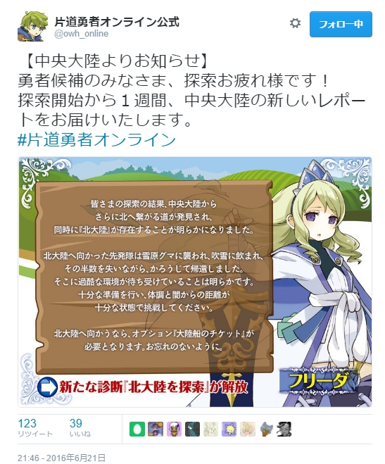
| 【アルバートの感想】
さっそく俺は北大陸へ向かってみるぞ！ 伝説Ｐを5点支払って《大陸船のチケット》を購入し、そのまま北大陸へ出航だ！
DKが10点しかなくて闇が近いまま北大陸に来てしまったのでちょっと興奮しているぞ！ |
◆選択 → 《大陸船のチケット》を購入し即使用、北大陸へ渡る
【ｽﾃｰﾀｽ】 LP：51 DK：10 伝説P：14→9
【ｵﾌﾟｼｮﾝ】 《◆強打》 《◆強打》 《仲間：頼れるペット》＝コナ王女
【ｽﾃｰﾀｽ】 LP：51 DK：10 伝説P：14→9
【ｵﾌﾟｼｮﾝ】 《◆強打》 《◆強打》 《仲間：頼れるペット》＝コナ王女
【大陸移動の描写】
「北大陸は危険らしい。それでも来るのか？」
俺は港でコナ王女に問うた。
「いまの私は一人では生きられない身……そんな聞き方、ずるいです」
「……」
そうだ。本当なら、王女はあの街で闇に呑まれていた。彼女の生きる目的は、俺自身に他ならない。
「本当は、アルバート様には危険な場所に行って欲しくありません……でも、どうしても行くというなら、この身であなたを守ります」
ここまで言われて、それでも行く必要があるのだろうか……だが、俺が危険を背負うことで救われる人々がいるのなら、俺も行くべきだとも思う。
「付きあわせてすまん……いや、ありがとう、コナ王女」
「私は、生きるときも死ぬときも一緒です、アルバート様」
死ぬ方の「一緒」は一瞬否定したくなったが、何も言わなかった。俺も同じ立場なら、きっとそう言ったからだ。
そして俺達は乗船した。
【8日目】
【北／宝箱／探索3】 アルバート＠北は捨てられた街で豪華な宝箱を発見した！ 頑丈なカギがかかっている。時間はかかるが開けるならＤＫ－7、伝説Ｐ＋8。無視するならＬＰ＋3、ＤＫ＋2。 |
| 【アルバートの感想】
また宝箱！？ たのむ！ 《◆開錠》ちゃん帰ってきて！！ あやまるから！
|
ついに北大陸に到着した。船が着いたのは、もう誰も住んでいないとおぼしき、捨てられた街だった。辺りを探索すると、屋敷に豪華な宝箱が放置されたままになっていた。
闇はかなり近い。開けるか非常に迷ったが……俺は宝のために北へ来たわけじゃない。先を急ぐ。
捨てられた街を進む途中、コナ王女と話をした。
「そういえば……コナ王女は、俺のペットとして何をすべきと考えているのか教えてくれないか。どうも俺の意図とズレがある気がする」
「えっと、そうですね……」
コナ王女はしばらく考え、次のように答えた。
「首輪を付けてナワを引いていただいたり、四つん這いでお食事したり、私がほっぺたをおなめして『やめろよー』って言われたり、抱いてもらって夜の暖になったり、3日に一回アルバート様に体を洗っていただいたり……」
「おい待て！ 明らかにヤバいのがあるぞ！」
「片道勇者オンラインは全年齢だからな！ というかそういうの全部いらないから！」
「じゃあ私はどうペットであればいいんですか！？」
「それはその……そう、ペットは家族だ」
「家族……！？」
コナ王女が顔を赤らめた。マズい、また誤解されてる気がする！
そんな茶番を繰り広げながら、俺たちは捨てられた街を出た。外には果てしない銀世界が広がっている。
「さあ……いよいよ北大陸の旅が始まるぞ。準備はいいか、コナ王女！」
「はい！」
俺たちの戦いはこれからだ！ アルバート先生の次回作にご期待下さい！
◆選択 → 宝箱無視でＬＰ＋3、ＤＫ＋2
【ｽﾃｰﾀｽ】 LP：51→54 DK：10→12 伝説P：9
【ｵﾌﾟｼｮﾝ】 《◆強打》 《◆強打》 《仲間：頼れるペット》＝コナ王女
【ｽﾃｰﾀｽ】 LP：51→54 DK：10→12 伝説P：9
【ｵﾌﾟｼｮﾝ】 《◆強打》 《◆強打》 《仲間：頼れるペット》＝コナ王女
【9日目】
【北／休息／探索3】 アルバート＠北は凍った街にじっと立ち尽くしている人物を見つけた。よく見ると……立ったまま凍っている癒し手だ！ 君は鎮魂の祈りを捧げ、先へ進む……。ＬＰ＋2、ＤＫ＋3。 |
俺たちは銀世界が広がる北大陸を歩き続け、ようやく次の街へたどりついた。だがそこもまた、誰もいない凍った街だった。
「誰かいないか！」
帰って来るのはこだまだけ……そんな中、俺は街のある通りで立ち尽くす人影を見つけた。だがその人影は、不自然なほど動かない。
近付いて見ると、それは癒し手の青年だった。何かをかばうような立ち姿のままじっとしている……いや違う、全身が凍り付いているのだ！ 凍った彼の表情は、脅威に立ち向かおうとする者特有の、勇気を感じさせる顔だった。
彼は、何かと戦ってこうなったのだろうか。
闇は近い。何もしてやることはできなかったが、俺は彼の指から、名前の刻まれた指輪を形見として預かった。彼を知る者がいれば、彼の勇姿を伝えてこれを渡そう。
「もし彼が生まれ変わったなら、一度話をしたいものだ」
俺とコナ王女は、この勇気ある青年にしばし祈りを捧げ、その場を後にした……。
◆選択 → 診断結果でＬＰ＋2、ＤＫ＋3
【ｽﾃｰﾀｽ】 LP：54→56 DK：12→15 伝説P：9
【ｵﾌﾟｼｮﾝ】 《◆強打》 《◆強打》 《仲間：頼れるペット》＝コナ王女
【ｽﾃｰﾀｽ】 LP：54→56 DK：12→15 伝説P：9
【ｵﾌﾟｼｮﾝ】 《◆強打》 《◆強打》 《仲間：頼れるペット》＝コナ王女
| 【アルバートの感想】 おい！ そろそろ10日目になろうというのにいまだに一回も戦闘してないぞ！ 驚くことにスキルのオプションをまだ一回も使用できていなくて、見本プレイが怪しくなってきたところだ。北大陸の厳しい環境よ、俺に試練を与えたまえ！ クマとかでいいから！ 頼む神様！ |
【10日目】
【街／交流／伝説Ｐ＋3】 暑苦しい理術士に、研究のためにアルバート＠北の体をすみずみまで“分析”させてくれと頼み込まれた。覚悟して承諾するならＬＰ－3、ＤＫ－3し、伝説Ｐ＋4。断るならＤＫ－1。 |
| 【アルバートの感想】
アッー！！
|
そろそろ、人に出会いたいものだが……そう思いながら氷の世界を進んだ末、俺はようやく街に着いた。ここも人はほとんど住んでいなさそうだ。煙突から煙が上がっていた建物があったので、そこを尋ねることにした。
ノックをして出てきたのは、暑苦しい理術士だった。
「おお、ここまで来たとはスンバラシィー！ 南の方からいらしたのかな！？ アッツゥイね！」
テンション高いな！ この寒さの中で、彼はすでに全身汗まみれだった。家に入らせてもらって分かったが、どうやらここに勝手に住みついているらしい。
「ここまで来た生存力スッゴォイね！ 君をくまなく分析させてくれ！ 片目くんがダメなら後ろの女性だッ！！」
「おい……」
「アルバート様には指一本触れさせません！ 私を調べて下さい！」
「いやいや待て、想像がたくましくなってしまうからよせ！ 俺がやる！」
俺は台に横になった。手足にベルトを締められ、理術士に服を一枚ずつ脱がされていく。
「あ、ああアルバート様の肌が！ あああ～！」
コナ王女は手で顔を覆いながら、指の隙間から俺をくまなく見ている。この部屋のみんな俺に興味津々か！ やめろ！ 見るな！
数分の診察が恐ろしく長く感じた。礼として部屋を借り、金ももらえたが……その日の夜、コナ王女が神妙な顔で言った。
「アルバート様……私もあなたをくまなく調べたいです……！」
「頼むやめろ！ もう俺をそっとしておいてくれー！」
夜は更けていった……。
◆選択 → 覚悟して承諾し、分析させてＬＰ－3、ＤＫ－3、伝説Ｐ＋7
【ｽﾃｰﾀｽ】 LP：56→53 DK：15→12 伝説P：9→16
【ｵﾌﾟｼｮﾝ】 《◆強打》 《◆強打》 《仲間：頼れるペット》＝コナ王女
【ｽﾃｰﾀｽ】 LP：56→53 DK：15→12 伝説P：9→16
【ｵﾌﾟｼｮﾝ】 《◆強打》 《◆強打》 《仲間：頼れるペット》＝コナ王女
| 【アルバートの感想】 北国まで来て……けがされちゃった……。 |
【11日目】
【北／交流／探索4】 静かな雪原にて、アルバート＠北は助けを求める暑苦しい妖精と出会った。助けるためにオプションを1つ譲渡するか、ＬＰ－8するなら伝説Ｐ＋5。でなければＬＰ＋2、ＤＫ＋2。 |
汗まみれの理術士に体中を診断されてしまった俺だったが、めげずに旅を再会する。街を出ると、そこには静かな雪原が広がっていた。
少し前方を雪原グマが猛烈な勢いで横切っていく。あのクマ、何か追ってるのか？ ……よく見るとクマが追っているのは妖精だ！
その妖精は俺に気付いて、叫んだ。
「ねえ、どうしてそこの人たち助けてくれないの！？ もっと情熱的にッ！ さあレッツ熱血ヒーロー！」
レッツも何もこの場面でヒーローできるの俺だけだろ！ しかたなく、俺はまだ全然使っていない戦斧を取り出した。
妖精とクマがこちらへ一直線に迫ってくる！ 俺は斧を構えクマに向かって突進した！
「おおりゃあああーッ！！」
《◆強打》！ 俺は斧を水平に振り雪原グマに叩きつけた！ ズドンと手応え十分！ まちがいなくホームランだ！
十分な手応えの一撃だったのだが、雪原グマは倒れることなく、そのまま逃げていった。北大陸の生物はなんと頑丈なんだ……。
「ありがとうヒーロー！ 熱い！ も、え、るー！ 情熱ファイアー！」
逃げていたのは、全身汗まみれの暑苦しい妖精の少女だった。
「お礼にすごいものあげる！ はい！」
渡されたのはいくらかの宝石だった。
「これは助かる、すまんな」
「また会えるといいねヒーロー！ じゃあねーバイバーイ！！」
「え、おい……」
彼女は汗まみれのまま行ってしまった。妖精一人で大丈夫なのか……！？
◆選択 → 《◆強打》譲渡で伝説Ｐ＋5
【ｽﾃｰﾀｽ】 LP：53 DK：12 伝説P：16→21
【ｵﾌﾟｼｮﾝ】 《◆強打》《仲間：頼れるペット》＝コナ王女
【ｽﾃｰﾀｽ】 LP：53 DK：12 伝説P：16→21
【ｵﾌﾟｼｮﾝ】 《◆強打》《仲間：頼れるペット》＝コナ王女
| 【アルバートの感想】 出会うヤツがみんな汗まみれだ…北大陸に適応すると汗まみれになるのか！？ |
【12日目】
【北／戦闘／探索7】 そんなまさか！ アルバート＠北は強そうな雪原クマの群れと遭遇してしまった！ 無数の白い巨体が迫る！ 戦うのならＬＰ－18、伝説Ｐ＋8。必死で逃げるならＬＰ－3、ＤＫ－4。 |
「いやっほーヒーローさん熱血ぅぅー！！！」
あれは昨日会った暑苦しい妖精だ、その後ろにはまたクマが……いや待て、今度は無数のクマが妖精を追っているではないか！ 一体何すればあんなに追われるんだ！
「まあいい……望むところだ、ヒーローしてやる！」
冒険を始めてから12日目、俺はついに初【戦闘】に遭遇した。このときをどれほど待ちわびたことか！
「コナ王女、戦えるか！？」
「はい、微力ながら！」
俺たちはクマの群れに突入していく。だが必殺の《◆強打》さえもクマたちの勢いを止めきれない！
その後、俺たちは辛うじて雪原クマの群れを撃退した。コナ王女も俺も傷を負っている。
どこに隠れていたのか、妖精が出てきてえらそうに言った。
「くくく、雪原クマ軍団などわれら四天王では最弱……」
「なんだ四天王って！？」
「いやその、本当ごめーん！」
汗まみれの暑苦しい妖精は、俺たちに再び謝りながら大量の宝石を差し出し、去っていった。
「なんだったんだ……」
「ところでアルバート様……私にもヒーローしてくださっていいんですよ？」
「待て！ 何を言ってるんだコナ王女！？」
王女はいつも通りだった。
◆選択 → 《◆強打》《仲間：頼れるペット》でＬＰ減少11軽減、ＬＰ－7、伝説Ｐ＋8
【ｽﾃｰﾀｽ】 LP：53→46 DK：12 伝説P：21→29
【ｵﾌﾟｼｮﾝ】 《仲間：頼れるペット》＝コナ王女
【ｽﾃｰﾀｽ】 LP：53→46 DK：12 伝説P：21→29
【ｵﾌﾟｼｮﾝ】 《仲間：頼れるペット》＝コナ王女
| 【アルバートの感想】 うおおお伝説Pがたまってきたぞ！ |
【13日目】
【北／危機／探索4】 アルバート＠北が遺跡に入ると入口が閉ざされてしまった！ 脱出口を探すべく歩き回り、ＬＰ－3、ＤＫ－4、伝説Ｐ＋3。剣士か狩人の支援を得られれば一度だけＤＫ減少を2軽減。 |
クマを倒し、歩き続けた俺たちは地下遺跡を見つけた。入ってみると……その瞬間、入口が閉ざされてしまったではないか！
「ノォォォー！！」
闇は近い、このままだとまずい！ 俺とコナ王女は遺跡の中を走り回り、出口を探した。闇は刻一刻とこちらに迫ってくる。
必死に走り回る中、途中で俺は複数の狩人たちに助けられた。
「向こうに出口があるよ」と指さす者、「借りを返すよ！」と導いてくれる者、「こっちに出口がありますよー！」と叫んでくれる者、キノコっぽい者、入口脇の壁のもろさを教えてくれる者……。
結局、四、五人程の狩人に助けられながら俺は迷宮を出た。
「すまないみんな、あと一本、曲がり角を間違っていたら出られたか……ありがとう」
「皆さま、本当にありがとうございました」
俺たちは救ってくれた狩人たちに感謝して、闇から逃れるように歩き出した。
俺は歩いている途中、あることに気付いてしまった。
「待て、助けてくれた者に剣士が一人もいなかった！ これはミステリーだぞ、コナ王女！」
「剣士が不人気なだけじゃないでしょうか……」
剣士たちには負けずに頑張ってただきたい、そう思った一日だった……。
◆選択 → 複数の狩人から支援を受けられ、ＬＰ－3、ＤＫ－2、伝説Ｐ＋3
【ｽﾃｰﾀｽ】 LP：46→43 DK：12→10 伝説P：29→32
【ｵﾌﾟｼｮﾝ】 《仲間：頼れるペット》＝コナ王女
【ｽﾃｰﾀｽ】 LP：46→43 DK：12→10 伝説P：29→32
【ｵﾌﾟｼｮﾝ】 《仲間：頼れるペット》＝コナ王女
| 【アルバートの感想】 剣士は皆ＵＦＯにさらわれたんだ！ 間違いないッ！ |
【14日目】
|
【北／危機／探索5】
凍った街にて、マゾな氷の精がアルバート＠北に話しかけてきた。「いい道を教えてあげる！」 氷の道を案内されＬＰ－２、ＤＫ＋６。海賊の支援を得られれば一度だけＤＫ＋３。 |
新たな街へ来たが、ここも完全に凍ってしまっていた。
「また誰もいない街か……ん？」
ひらひらと小さな少女が寄ってきた。だがその姿はうつろで、小妖精とはまた違うようだった。実体がないからか服も着てない。目の毒だ。
「うふふ、こんにちは、お兄さん」
その氷の精はいきなり俺に要求を突き付けてきた。
「ハァハァ、ところでお願いよ、お兄さん！ 私をいじめてよ！ いじめてくれたらいい道教えてあげるから！」
「おいどうしてそうなる！？」
何か理由があるに違いないと思ったが、氷の精はただのマゾだった。
そこへ半獣人の海賊がやってきた。天の助けだ！
「助けてくれ！ こいつをいじめるのに協力してくれ！」
コナ王女に白い目で見られる俺。興奮してきた――い、いやマゾじゃないぞ！
結局、俺たちは氷の精をいい具合にツンツンして道を教えてもらうことができた。
支援のおかげもあって氷の精はより興奮できたようで、だいぶ先まで案内してもらえた。
「こんなことに付き合わせてしまってすまんな……助けに感謝する！」
俺は助けてくれた海賊に礼を言って先を急いだ。北大陸に来てから、人の手助けが身に染みる……。
しばらく歩いてコナ王女が言った。
「ところでアルバート様、私もいじめてくださっていいんですよ！？」
「なんでそうなる！ どちらかというと俺はいじめられる方が好きだ！」
その夜、俺は要望通りコナ王女に踏まれ続けた。総合的にはよかったと感じる。やっぱりマゾなのか、俺……！
◆選択 → 海賊の支援を受けられ、ＬＰ－2、ＤＫ＋9
【ｽﾃｰﾀｽ】 LP：43→41 DK：10→19 伝説P：32
【ｵﾌﾟｼｮﾝ】 《仲間：頼れるペット》＝コナ王女
【ｽﾃｰﾀｽ】 LP：43→41 DK：10→19 伝説P：32
【ｵﾌﾟｼｮﾝ】 《仲間：頼れるペット》＝コナ王女
| 【アルバートの感想】 コナ王女に踏まれてマゾの気持ちが少しだけ理解できた。これからは彼らを偏見の目で見ることはないだろう。 |
【15日目のオプション購入】
| 【伝説Ｐがたまってるけれど】
伝説Ｐがたまってきたのでコナ王女をそろそろ人間扱いしたいと思っているのだが、コナ王女を人間に変えた場合、そこで余る《仲間：頼れるペット》を捨てるのがもったいないので何か新しくペットにできそうな者が出るまで待っているのだ。
……ん？ あっ、雪原クマ！ 俺は雪原クマを洗脳するぞ！ |
「そういえば、コナ王女は癒しの技も知っているらしいな……今日からはペットをやめて、剣士か癒し手として働いて欲しいんだが……」
「えっ！？」
コナ王女に予想外に驚かれて、俺はとまどった。俺はこのために伝説Ｐをためていたんだが……。
「そんな……私はペットでいたいです！ どうしてペットのままではダメなんですか！？」
「いやいや色々ダメだろ！？ というか代わりの奴もう連れてきちゃったし！」
俺は雪原クマを紹介した。先日逃した奴と再会したのだが、なぜか俺になついてきたのだ。
「ヴォー」
クマがしゃべった。俺は動物の言葉が分かる。それは衝撃の一言だった。
「なんだと…おまえクマのくせに癒しの技が使えるだと！？ マジか！」
「あ、よかった。それなら私のペットの立ち位置も安泰ですね」
俺は絶句した。だが二人とも喜んでる。
こうして、俺は《仲間：優しき癒し手》＝熊 を仲間にし、先へ進んだのであった……。
しかしどうやったらコナ王女はペットをやめてくれるんだ！ いやもういっそこのままでいいのか！？
俺は青い顔のまま、二人の後をフラフラとついていった……。
◆選択 → 伝説Ｐを15消費し、《仲間：優しき癒し手》を購入。
【ｽﾃｰﾀｽ】 LP：41 DK：19 伝説P：32→17
【ｵﾌﾟｼｮﾝ】 《仲間：頼れるペット》＝コナ王女、《仲間：優しき癒し手》＝熊
誤植としか思えない配役になった。
【ｽﾃｰﾀｽ】 LP：41 DK：19 伝説P：32→17
【ｵﾌﾟｼｮﾝ】 《仲間：頼れるペット》＝コナ王女、《仲間：優しき癒し手》＝熊
誤植としか思えない配役になった。
| 【アルバートの感想】 相手のためを思ってやっていたことが、実は相手に求められていなかった……読者のみんなもいつかそういう体験に出会うだろう。こうして人は少しずつ大人になっていくんだな……。 |
【15日目】
【北／休息／探索3】 アルバート＠北は、凍える大氷原でスノークリスタ草という珍しい草を見つけた。食べると元気が出るが、高く売ることもできる。その場で食べるならＬＰ＋10。あとで売るなら伝説Ｐ＋6。 |
俺の顔はまだ青いままだった。
「あ、アルバート様、珍しい草がありますよ！ これを食べると元気が出るそうです」
そう言ってコナ王女はスノークリスタ草を摘んできた。
「え……ああ……」
俺はうつろな目のまま、言われるままに草をそのまま食べてしまった。
そして食った後で気付いた。この草、売れば結構な金になるんだった！
「ああーーー！」
「ほら、アルバート様が元気になりましたよ、熊さん！」
「ヴォー！」
なんということだ……まあ少し疲れていたし、ちょうどいいか……そう自分を納得させ、先を進む……。
◆選択 → スノークリスタ草を食べてLP+10
【ｽﾃｰﾀｽ】 LP：41→51 DK：19 伝説P：17
【ｵﾌﾟｼｮﾝ】 《仲間：頼れるペット》＝コナ王女、《仲間：優しき癒し手》＝熊
【ｽﾃｰﾀｽ】 LP：41→51 DK：19 伝説P：17
【ｵﾌﾟｼｮﾝ】 《仲間：頼れるペット》＝コナ王女、《仲間：優しき癒し手》＝熊
| 【アルバートの感想】 LPもDKもそれぞれほぼ初期状態に近付いてきた。危ない場面もあったが意外と何とかなっているな！ 仲間は何ともなってない！ |
【16日目】
|
【北／戦闘／探索7】
そんなまさか！ アルバート＠北は凶悪な雪原クマの群れと遭遇してしまった！ 無数の白い巨体が迫る！ 戦うのならＬＰ－１８、伝説Ｐ＋８。必死で逃げるならＬＰ－３、ＤＫ－４。 |
| 【アルバートの感想】
アッー！ またクマー！
|
昨日、仲間にした雪原クマ――「彼女」は、どうやらクマ界のアイドルであることが判明した。自覚はしてないようだが。
そしてまさに今、俺はアイドルを雇ったツケを払うことになっていた。俺の目の前には、暴徒と化した狂暴なファンの雪原クマ軍団が迫っていたのだ！
「「「ヴォー！！」」」
ファンのクマたちが怒りの叫び声を上げる。
「ヴォー！」
私のために争わないで！ と俺の側の「アイドル熊」が言った。だがファンたちは耳を貸さず、俺に襲いかかる！
「ならばこの子を賭けて俺と勝負だ！ 来い！」
俺はファンの熊軍団に突撃した！
長くに渡る壮絶な戦いの末、立っていたのは俺の方だった。
「ヴォー！」
キャー素敵！ と言われ、アイドル熊から締め付けられる俺。グギギ…苦しい！
その後、俺はアイドル熊から傷やら体中をなめまわされて治療された。コナ王女がうらやましそうに見ている。
「私、少しだけ癒し手になりたくなってきました！」
「待て！ 癒し手ってこんなにペロペロなめて癒したりしないから！ え？ ネムリとか言う女がそんなこと言ってた！？ しらんな！」
だが待てよ、コナ王女と熊が交代してくれれば俺のオプション欄はまともになる……。
それならばと、俺はこの方向性でコナ王女の人間への更正を狙っていくことを決めた。最終的に王女と熊が役割を交代してくれれば万々歳なんだが……。
そんなことを考えつつ、俺は熊にベロベロなめられながらしばし体を休めたのだった……。
◆選択 → スノークリスタ草を食べてLP+10
【ｽﾃｰﾀｽ】 LP：51→35 DK：19 伝説P：17→25
【ｵﾌﾟｼｮﾝ】 《仲間：頼れるペット》＝コナ王女、《仲間：優しき癒し手》＝熊
【ｽﾃｰﾀｽ】 LP：51→35 DK：19 伝説P：17→25
【ｵﾌﾟｼｮﾝ】 《仲間：頼れるペット》＝コナ王女、《仲間：優しき癒し手》＝熊
| 【アルバートの感想】
対人関係で悩んでいます。
ちなみに俺は過去の冒険で「翻訳指輪」というアイテムを手に入れていてな、動物の言葉も分かるんだ。浮遊島での冒険も楽しかったな……。 |
【探索レポート】
https://twitter.com/owh_online/status/748498907940806656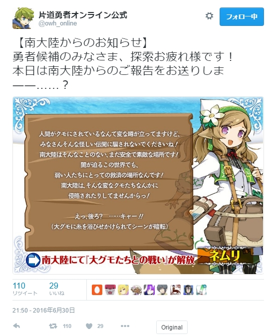
| 【アルバートの感想】
そうかそうか、南大陸は安全なのか……ってネムリ嬢おまえが捕まってどうするー！！
それにしても人間がクモにされているとは穏やかではないな。南大陸で大グモとの戦争でも始まりそうな雰囲気だ。 だが北大陸にいるのも徐々に辛くなってきたし、次は南へ向かってみるのも面白そうだな！ よし、行くぞ！ |
【大陸移動】
ネムリ嬢が捕まったと聞いて、俺は南へと旅立つことにした。
「あの少女らしい体格から生えるたくましいしっぽは国宝級だからな！」
などと言っていたらコナ王女に変なところをつねられた、や、やめろ！
そんな場面もありつつ、俺たちは船に乗り込む。
出航前、俺は船員にとがめられた。
「おい……それマジで連れてくの？」
彼が指をさす先にはアイドル熊がいた。
「すまんな、うちのパーティの癒し手なんだ」
「いやし……は！？」
「なおこっちの王女はペットだ」
「ワン！」
「えっ……逆じゃね！？」
こうして俺たちは凍り付く大地を離れ、南大陸へやってきた。暖かい、湿った風が俺のほおをなでる。
「少しはゆっくりしたいが……どうなるかな」
南大陸では大グモとの戦いが活発になりつつあるはずだ。俺は気を引き締め、南大陸の大地に降り立った。
◆選択 → 《大陸船のチケット》伝説Ｐ：５ を購入、消費して南大陸へ移動した
【ｽﾃｰﾀｽ】 LP：35 DK：19 伝説P：25→20
【ｵﾌﾟｼｮﾝ】 《仲間：頼れるペット》＝コナ王女、《仲間：優しき癒し手》＝熊
【ｽﾃｰﾀｽ】 LP：35 DK：19 伝説P：25→20
【ｵﾌﾟｼｮﾝ】 《仲間：頼れるペット》＝コナ王女、《仲間：優しき癒し手》＝熊
| 【アルバートの感想】
ネムリ嬢、無事でいてくれ……！
|
【17日目】
【南／戦闘／探索6】 アルバート＠南が砂漠を歩いていると好色な鳥人の群れが飛んできた！ 逃げ場がない！ 撃退できるがＬＰ－7、ＤＫ－1。海賊か狩人の支援を得られれば一度だけＬＰ減少を3軽減。 |
船を下り、港を出るとそこは砂漠だった。暑い……。コナ王女はもともと暑い土地の住人らしく割と平然としているが、アイドル熊は雪原生まれゆえかすでに死にそうになっていた。
空を見ると、何もない空間に複数の黒い点が。鳥……？ 違う、あれは鳥人の群れだ！
鳥人たちはなぜかいやらしい目でこちらを……いや、俺を見ている！？ 俺の体が目当てなのか！？
「コナ王女、このままだと俺が色々危ない！ 援護を頼む！」
「もちろんです！ アルバート様をいやらしい目で見る者は全て始末します……ウフフ！」
コナ王女恐い。
鳥人どもは何度も俺を捕まえて持ち帰ろうとしたが、そのたびにコナ王女がやつらの足を叩き斬ってくれた。
戦っているうちに、どこからともなく矢が飛んできて鳥人たちを貫いた。見ると、2人の狩人が支援をしてくれているではないか！
「すまん、援護助かる！」
狩人達の助けも受けつつ、しばらくしてようやく戦いは終結した。
「みんなのおかげで助かった、ありがとう」
俺は支援しにきてくれた皆に感謝を告げた。その手助けのおかげでなんとか撃退できたのはいいが、地面を見ると鳥人の足だらけになっていた。
「うわ…」
「大丈夫！ 鳥人の足はみんな切り取りましたよ！」
俺が大丈夫じゃない。
その後、俺はアイドル雪原クマに治療をしてもらい、再び砂漠を進み始めた。
「アルバート様、これっておいしいんでしょうか？」
コナ王女はさっきのヤツらの足を大量に背負っていた。食えるのかそれ…ああ、アイドル熊がうまそうに食ってる！ もう好きにしてくれ！
◆選択 → 支援をいただいた＋ペット＋癒し手使用で、ＬＰ－2、ＤＫ－1
【ｽﾃｰﾀｽ】 LP：35→33 DK：19→18 伝説P：20
【ｵﾌﾟｼｮﾝ】 《仲間：頼れるペット》＝コナ王女、《仲間：優しき癒し手》＝熊
【ｽﾃｰﾀｽ】 LP：35→33 DK：19→18 伝説P：20
【ｵﾌﾟｼｮﾝ】 《仲間：頼れるペット》＝コナ王女、《仲間：優しき癒し手》＝熊
| 【アルバートの感想】 南大陸での冒険がついに始まる！ |
その夜……。
https://twitter.com/owh_online/status/748881750563041280
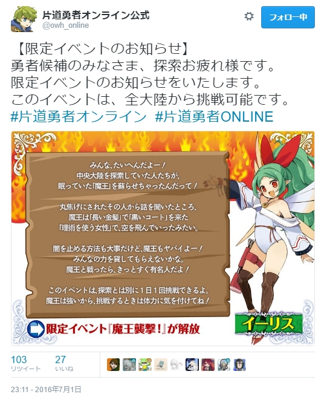
| 【限定イベント開始】
魔王が来たぞ！ 全大陸から1日1回、普通の診断とは別に挑戦可能とのことだ！ あと数十分で日が変わるので俺は魔王診断に突貫するぞ！ うおおおー！！
|
【魔王／交流】 アルバート＠南は魔王に襲われ、ひん死の勇者候補を発見。《癒やしの草》か《癒やしのアンプル》を使えば《仲間：気高き騎士》を取得できる。ない場合は看取ってＤＫ－1。どちらも伝説Ｐ＋3。 |
「おい、死ぬな、ああああ！」
騎士の勇者候補は、俺の目の前で命の灯火を消そうとしていた。
彼は魔王に襲われ、もはや癒し手のアイドル熊にも手が付けられない重傷だった。彼の名は「ああああ」というらしい。名前表で1ゾロだったのか……って今はどうでもいいな！
「あとは……頼む……ゴフッ」
俺たちが何もできないまま、騎士ああああは息を引き取った。墓を作る時間はなかった。
「騎士様、安らかにお眠りください……」
コナ王女が別れ際に祈りを捧げる。俺も心の中で同じことをつぶやいた後、俺たちはその場を立ち去った……。
◆選択 → アイテムがないので看取ってＤＫ－1、伝説Ｐ＋3
【ｽﾃｰﾀｽ】 LP：33 DK：18→17 伝説P：20→23
【ｵﾌﾟｼｮﾝ】 《仲間：頼れるペット》＝コナ王女、《仲間：優しき癒し手》＝熊
【ｽﾃｰﾀｽ】 LP：33 DK：18→17 伝説P：20→23
【ｵﾌﾟｼｮﾝ】 《仲間：頼れるペット》＝コナ王女、《仲間：優しき癒し手》＝熊
| 【アルバートの感想】 騎士ああああの遺志は俺が継ぐぞ！ 待っていろ魔王！ |
【18日目】
【魔王／戦闘】 アルバート＠南は激戦の末、からくも魔王を撃退した。彼女が去った跡に、見たことのない装飾品を見つける。これが世界を救うヒントになるのだろうか？ ＬＰ－8、伝説Ｐ＋6。 |
| 【アルバートの感想】
もう魔王を撃退！？ フラグ回収早すぎだろ！
|
「貴様が騎士ああああを殺したのか…許せん！」
俺は魔王と対峙していた。騎士が死んだのがリアル時間で40分くらい前であることを考えるとフラグ回収が早すぎてヤバい。最終回が2ページでまとめられたマンガのような早さだ。
「ならば来い、勇者候補ども！」
魔王が来る！
俺はコナ王女と共に、魔王と激戦を繰り広げた。
最終的に倒すことはできなかったものの、数時間後、なんとか魔王を撃退することに成功した。後は他の勇者候補たちに任せた……！
なお戦闘中、俺は魔王の下半身が気になってしょうがなかった。はいてるのか、あれ？
ふと地面を見ると、見たことのない装飾品を見つけた。それは魔王が落とした髪飾りだった。
「ヴォー」
アイドル熊がそれを欲しそうにしていたので、俺はくれてやった。
しかし、代わりにコナ王女が少しむくれてしまった。こういう場合どうすればよかったんだ……！？
◆選択 → ペットと癒し手使用でＬＰ－6、伝説Ｐ＋6
【ｽﾃｰﾀｽ】 LP：33→25 DK：17 伝説P：23→29
【ｵﾌﾟｼｮﾝ】 《仲間：頼れるペット》＝コナ王女、《仲間：優しき癒し手》＝熊
【ｽﾃｰﾀｽ】 LP：33→25 DK：17 伝説P：23→29
【ｵﾌﾟｼｮﾝ】 《仲間：頼れるペット》＝コナ王女、《仲間：優しき癒し手》＝熊
| 【アルバートの感想】 騎士ああああの仇を取ったぞ！ 第一部完！ なお魔王診断は通常診断とは別に引けるので、続けて通常の診断を引くぞ。 |
【街／危機／伝説Ｐ＋3】 アルバート＠南はセクシーな狩人と出会った。「動く的で練習がしたいんです！」 弓の標的になってあげるならＬＰ－5、ＤＫ－2、伝説Ｐ＋3。慌てて逃げるならＬＰ＋3、ＤＫ－1。 |
「ねえ、お願い……私の的（まと）になって？」
街に行った俺は、セクシーな女狩人に突然声をかけられた。服の上からでも分かる悩殺的なボディ、男をたぶらかすことに特化した甘い声。強敵だ。
「お、おい、的になれとはどういう意味だ」
「アルバート様！ 行きましょう！」
「私……動く的で練習がしたいんです！」
セクシーな狩人はそう言って弓矢を取り出した。
「そのままの意味だと！ 一瞬期待しちゃっただろ！？」
「もう！ そういった期待なら私が応えます！」
コナ王女は置いといて、どうする？ 狩人に協力するか否か……。
「……俺が一度でも人助けをしなかったことがあるか？」
俺はそう言って、結局、狩人の動く的になった。矢尻はつぶしてあったが、何本か命中して痛い目を見た。
「ふう……ありがと、かっこいいお兄さん！」
セクシーな狩人は投げキス一つの礼をして去っていった。
あとでアイドル熊にケガを治療してもらおうと思ったら、
「ヴォー（今日はもう疲れちゃった）」
と言われて放置されてしまった。そういえば仲間オプションの使用は1日1回だっけ……決してアイドル熊が嫉妬したり妬んだりしているからではないと信じたい。
俺は日が変わるまで宿で休むことにした。今日は痛い一日だった……。
◆選択 → 標的になりＬＰ－5、ＤＫ－2、伝説Ｐ＋6
【ｽﾃｰﾀｽ】 LP：25→20 DK：17→15 伝説P：29→35
【ｵﾌﾟｼｮﾝ】 《仲間：頼れるペット》＝コナ王女、《仲間：優しき癒し手》＝熊
【ｽﾃｰﾀｽ】 LP：25→20 DK：17→15 伝説P：29→35
【ｵﾌﾟｼｮﾝ】 《仲間：頼れるペット》＝コナ王女、《仲間：優しき癒し手》＝熊
| 【アルバートの感想】 さらに続けて女神像診断というのもやってみるぞ！ こちらはDK-4することでゲーム中1回だけいつでも引くことができるというものだ。何かいいものが出ればいいが……。 |
【女神／入手】 女神に祈りを捧げると、妖しい光がアルバート＠北を包み込む。次の瞬間、手の中には《周辺の地図》があった。望むなら、このオプションを獲得して良い。 |
少しヤバくなってきた俺は女神像に祈ることにした。ＤＫが4点減るまで祈った頃、妖しいピンクの光が俺に降り注いだ……っておい、神々しい光じゃないのか！ こんなときまで大人の雰囲気を出さなくてもいいぞ女神様！
気付くと俺の手元には紙切れがあった。
「これは……《周辺の地図》！」
ＤＫが減ってるこの状況ならこの地図は役に立つ！ 問題は女神像に祈ったコストと同じくらいしか役に立たないことだ！
「ないよりマシか……助かった、女神よ。もう会うことはないだろう……」
俺はその場を立ち去った。
◆選択 → 女神像に祈ってDK－4し、《周辺の地図》ゲット。
【ｽﾃｰﾀｽ】 LP：20 DK：15→11 伝説P：35
【ｵﾌﾟｼｮﾝ】 《仲間：頼れるペット》＝コナ王女、《仲間：優しき癒し手》＝熊、《周辺の地図》
【ｽﾃｰﾀｽ】 LP：20 DK：15→11 伝説P：35
【ｵﾌﾟｼｮﾝ】 《仲間：頼れるペット》＝コナ王女、《仲間：優しき癒し手》＝熊、《周辺の地図》
| 【アルバートの感想】 《周辺の地図》はDK＋5しかできないからほとんど得した感がないぞ、女神様！ |
【19日目】
【魔王／交流】 アルバート＠南は魔王に襲われ、ひん死の勇者候補を発見。《癒やしの草》か《癒やしのアンプル》を使えば《仲間：気高き騎士》を取得できる。なければ看取ってＤＫ－1。どちらも伝説Ｐ＋3。 |
| 【アルバートの感想】
またァ！？
|
「おい、死ぬないいいい！」
俺たちが街を出ると、また魔王に襲われたひん死の女騎士を発見した。彼女の名前は「いいいい」だという。
「頼む、魔王を……ゴフ！」
何もできぬまま、女騎士は俺の目の前で息を引き取った……くそっ……！
「分かった、俺が魔王を倒してやる！ 安らかに眠れ……」
「騎士様、安らかにお眠りください……」
あれ？ 2日前にも似たようなことを言った気が……気のせいか？
しかし騎士ばかり魔王にやられているな！ 無印だと弱いが、プラスだと強化されたんだぞ騎士！
◆選択 → 看取ってＤＫ－1、伝説Ｐ＋3。【交流】なので《周辺の地図》を使用してＤＫ＋5！
【ｽﾃｰﾀｽ】 LP：20 DK：11→10→15 伝説P：35→38
【ｵﾌﾟｼｮﾝ】 《仲間：頼れるペット》＝コナ王女、《仲間：優しき癒し手》＝熊
【ｽﾃｰﾀｽ】 LP：20 DK：11→10→15 伝説P：35→38
【ｵﾌﾟｼｮﾝ】 《仲間：頼れるペット》＝コナ王女、《仲間：優しき癒し手》＝熊
| 【アルバートの感想】 女騎士の仇、討ってみせる！ |
【南／交流／探索3】 アルバート＠南は、罠にかかった炎を吐く鳥人を見つけた。暴れている鳥人を助けるなら、後で飛んできて金品を落としてくれる、ＤＫ－3、伝説Ｐ＋2。始末するか無視するならＤＫ＋2。 |
| 【アルバートの感想】
鳥人、だと……さすがに魔物を助けるつもりは……。
|
「おまえ……俺が何でもかんでも助けると思うなよ」
目の前には罠にかかって飛べなくなっている鳥人がいた。それを見てコナ王女が言った。
「アルバート様、闇も近いし無視してもよいのでは……」
「いや、これは俺に対する『運命』からの挑戦だ……まちがいない！」
神は、困っている者なら俺がどこまで助けるのか見て笑っているに違いない。だって鳥人だぞ！？ いちおう魔物だぞ！ 鳥人は俺を見て威嚇するように炎を吐いてきている。こいつを助ける道理などない！ あちっ！
――だが数十分後、俺は鳥人を解き放っていた……。
こんな状況でも鳥人を助けてしまう俺に、コナ王女もアイドル熊もあきれ顔になっていた。
「……悪かったな」
「いえ……そんなアルバート様だからついてきたんじゃないですか！ ね？」
「ヴォー」
「二人ともすまん……付き合ってくれてありがとう」
しばらく進むと、さっきの鳥人が飛んできて袋を落としてきた。あいつ……。
袋の中には銀貨と、それに混ざって銀の髪飾りが入っていた。
「コナ王女、待たせた詫びだ、これを受け取ってくれ」
そう言って髪飾りをコナ王女に渡す。
「あ…ありがとうございます！」
コナ王女は喜んで髪飾りを身に付けてくれた。そういえば、二週間ほど旅をしてコナ王女にプレゼントをしたのはこれが初めてかもしれない。癒し手の役はいらないと言われてしまったしな……。
「俺より気がきく鳥人だったな、あいつ」
俺は笑って、再び歩き出した。
◆選択 → 鳥人を助けＤＫ－3、伝説Ｐ＋2
【ｽﾃｰﾀｽ】 LP：20 DK：15→12 伝説P：38→40
【ｵﾌﾟｼｮﾝ】 《仲間：頼れるペット》＝コナ王女、《仲間：優しき癒し手》＝熊
【ｽﾃｰﾀｽ】 LP：20 DK：15→12 伝説P：38→40
【ｵﾌﾟｼｮﾝ】 《仲間：頼れるペット》＝コナ王女、《仲間：優しき癒し手》＝熊
| 【アルバートの感想】 助けたのは見栄のためだからな！ ごご誤解するなよ！ |
【20日目】
【魔王／危機】 魔物と戦うアルバート＠南の背後に魔王が迫る！ 乱戦となり、ＬＰ－15、伝説Ｐ＋8。誰かの支援を得られれば1人あたりＬＰ減少を2軽減（最大3人分）。支援は全大陸から受けられる。 |
発見が遅れた！ いつの間にか俺たちの背後には魔王が迫っていた。もう再戦か！ フラグ回収早すぎだろ！
「騎士いいいいの仇！ 今度こそここで決着を付けてやる！」
「フフ、やってみせろ！」
魔王はすばやい動きで俺たちを撹乱しながら火弾を放ってくる！
そのとき、数々の勇者候補たちが現れ、俺たちを援護してくれた！
矢で援護する者、手持ちの武器で攻撃してくれる者、魔王の尻に触る者、そして魔王の下着の色を調査せんとする者などなど――待て、そもそも魔王は下着付けてるのか！？ 危険なことはやめろ！
こうして激戦の末、皆のおかげで何とか魔王を撃退することができた。今回も逃したが、女騎士いいいいの無念もこれでいくらか晴れただろう……。
「支援感謝するぞ！ あとどさくさに紛れて魔王にセクハラしてたヤツが数名いただろ！？ まったく、いい加減にしろ！」
俺は来てくれたみんなをねぎらいながら、その場で休憩した。といっても主にアイドル熊にベロベロなめられまくっただけだがな！ これで実際に傷が治ってるんだから困る。
少しの休息の後、俺は支援にきてくれた者に別れを告げ、南大陸を再び歩き出した……。
◆選択 → 3人分の支援をもらいＬＰ6軽減、癒し手使用でＬＰ＋1でＬＰ－8
【ｽﾃｰﾀｽ】 LP：20→13 DK：12 伝説P：40→48
【ｵﾌﾟｼｮﾝ】 《仲間：頼れるペット》＝コナ王女、《仲間：優しき癒し手》＝熊
【ｽﾃｰﾀｽ】 LP：20→13 DK：12 伝説P：40→48
【ｵﾌﾟｼｮﾝ】 《仲間：頼れるペット》＝コナ王女、《仲間：優しき癒し手》＝熊
| 【アルバートの感想】 今回は仲間たちに助けられたな！ また会おう！ |
【南／戦闘☆／探索5】 アルバート＠南は大グモの巣で、首から下が繭に包まれた倒錯気味な中年男性を発見した。大グモの群れに襲われながら繭から救出するならＬＰ－7、伝説Ｐ＋5。逃げ出すならＤＫ＋3。 |
| 【アルバートの感想】
ついに来た……！ やはり南大陸では大グモが人をさらっているのか！
|
ようやく大グモの巣を見つけた俺たちは忍び足で内部を探索していた。そこで見つけてしまったのだ、首から下が繭に包まれた……中年男性を。
「うひひひーあたしゃクモになりたいんでこのまま放っておいてくださいよーダンナー」
そのおっさんは倒錯していた。
そして不幸なことに、その声で敵に気付かれてしまったようだ。大グモたちが迫ってくる！
「くそっ！ コナ王女、20秒でいい、敵の気を引いてくれ！」
「はい！」
俺は急いで繭を引き裂き、倒錯気味な中年男性を引きずり出した。
「よし、逃げるぞ！」
脱出の途中で大グモにやられてだいぶ傷を負ってしまったが、俺たちはなんとか安全な場所まで逃げ切ることができた。
「いーひひひー助けなくてもよかったのにーウヒヒ」
なんかダメそうだぞ、このオッサン……俺たちは彼を近くの街に預け、先を急いだ……。
街に寄ったついでに俺は買い物をした。買ったのは《エルザイト爆弾》だ！
「ば、爆弾……？」
「ああ、今後も大グモと戦うだろうしな。火薬の扱いなら慣れてる、任せてくれ」
俺は爆弾を大事にしまった。なぜか二人が、俺から少し距離を開けるようになった。
◆選択 → ペット使用でＬＰ1軽減、ＬＰ－6、伝説Ｐ＋8。爆弾購入で伝説Ｐ－15
【ｽﾃｰﾀｽ】 LP：13→7 DK：12 伝説P：48→56→41
【ｵﾌﾟｼｮﾝ】 《仲間：頼れるペット》＝コナ王女、《仲間：優しき癒し手》＝熊、《エルザイト爆弾》
【ｽﾃｰﾀｽ】 LP：13→7 DK：12 伝説P：48→56→41
【ｵﾌﾟｼｮﾝ】 《仲間：頼れるペット》＝コナ王女、《仲間：優しき癒し手》＝熊、《エルザイト爆弾》
【探索レポート】
https://twitter.com/owh_online/status/749940544218894336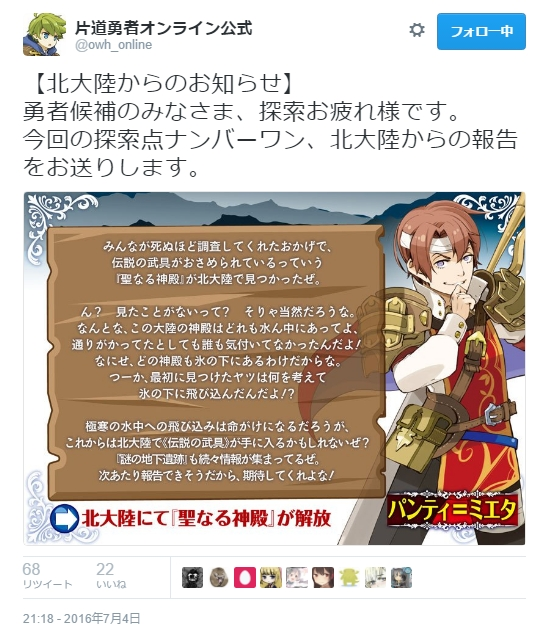
| 【北大陸・新情報！】
伝説の武具が水中にあっただと…むやみに極寒の水の中に突っ込んでいったおかしな者たちの行動にも意味があったのか！ だがリアルではマネしちゃいけないぞ、絶対にだぞ！
地下遺跡は楽しみだな。 |
https://twitter.com/owh_online/status/749941688957755393
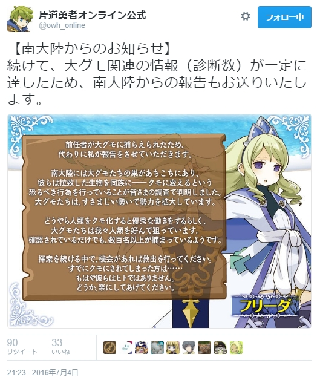
| 【南大陸・新情報！】
ネムリ嬢、クモにさらわれたままなのか！？
「クモに捕らえられた前任者は反逆者でしたが、今度の私は完璧で幸福です！」などと言ってフラッと帰って来ることを祈りたいな……さすがにクモ化したネムリ嬢は見たくないぞ！ |
【21日目】
【魔王／危機】魔王から必死で逃げるうち、アルバート＠南に闇が近づいてきていた。ここからすぐに離れなくては！ 全力で走るならＬＰ－6。慌てないならＤＫ－5。どちらの場合も伝説Ｐ＋4。 |
「ははは、どうした！ 無様だな、勇者候補ども！」
魔王は空から火弾を連射してきた。さすがにこの状況は不利だ。俺たちは距離を離すべく、隠れながら逃走する。
そのおかげで魔王のターゲットは他の者に移り、無事俺たちは逃げ切れた。捕まった奴、すまん！
だが途中で、俺たちは逃げる方角を間違えていたことに気付いた。こっちは闇の方角だ！
「まずい……！ どうする俺！？」
俺のＬＰは7、体力はほとんど残ってない。
「なら慌てず急がず全力で……歩く！」
俺たちは競歩でその場を離れた。
◆選択 → 癒し手使用でＬＰ＋1、慌てず行きＤＫ－5、伝説Ｐ＋4
【ｽﾃｰﾀｽ】 LP：7→8 DK：12→7 伝説P：41→45
【ｵﾌﾟｼｮﾝ】 《仲間：頼れるペット》＝コナ王女、《仲間：優しき癒し手》＝熊、《エルザイト爆弾》
【ｽﾃｰﾀｽ】 LP：7→8 DK：12→7 伝説P：41→45
【ｵﾌﾟｼｮﾝ】 《仲間：頼れるペット》＝コナ王女、《仲間：優しき癒し手》＝熊、《エルザイト爆弾》
| 【アルバートの感想】 そろそろLPもDKもヤバいな……！ |
【南／戦闘／探索2】 アルバート＠南は草原カワウソを発見！ だが動物保護団体の『緑の団』もいる。この元気な団員と戦って草原カワウソを狩るならＬＰ－15、伝説Ｐ＋7。無視するならＬＰ＋3、ＤＫ＋2。 |
| 【アルバートの感想】
動物保護団体か！
|
「原作だと『緑の森』じゃなかったか……？」
俺は草原カワウソを守る、元気な『緑の団』狩人を見て言った。
「オンライン版に出張してきた派生組織だからよ！ 中の人が間違えたわけでも文字数の問題でもないわ！」
本当か！？ ２文目の方が真実ぽいぞ！？
「もしあなたが保護動物を狩るようなら私があなたを狩るわ！ 狩人は狩人でも、私たちは人狩りなの！」
人狩り行こうぜ！ とか言って出発するんだろうか、こいつら。恐い。
「分かった、恨みは買いたくない。保護動物たちのこと、大事に守ってくれ」
「ええ！」
そんな話をして俺は『緑の団』の狩人と別れた。俺が保護動物を狩るわけがない…よほど腹が減ったときは別だぞ！？ 俺の偽善的な倫理感だって食欲には勝てないんだ。
「アルバート様、それなら私を食べ」
「そういうのはもういいって！」
いつもの流れだった。
◆選択 → 無視してＬＰ＋3、ＤＫ＋2
【ｽﾃｰﾀｽ】 LP：8→11 DK：7→9 伝説P：45
【ｵﾌﾟｼｮﾝ】 《仲間：頼れるペット》＝コナ王女、《仲間：優しき癒し手》＝熊、《エルザイト爆弾》
【ｽﾃｰﾀｽ】 LP：8→11 DK：7→9 伝説P：45
【ｵﾌﾟｼｮﾝ】 《仲間：頼れるペット》＝コナ王女、《仲間：優しき癒し手》＝熊、《エルザイト爆弾》
【22日目】
【南／戦闘／探索2】 アルバート＠南は実りあふれる山で元気なマッチョがゾンビに襲われているのを見つけた！ 急いで救出するなら礼を言われ、ＬＰ－3、伝説Ｐ＋1。助けないならＬＰ＋4、ＤＫ＋3。 |
「そこの青年、助けてくれないか！ フゥン！！」
山の中、元気なマッチョの豪腕がゾンビを吹っ飛ばす。
「おまえ助けいらないだろ！？」
「腐った肉を触ってしまった！ このままだと病気になってしまう！ フンヌ！」
弾けるゾンビ！ 散る肉片！ うわー！
仕方がないので洗えそうな場所を探し、案内することにした。幸いにも、近くに川が見つかった。
「ありがとう青年！」
その場で脱ぎ出すマッチョ。そして無駄にポージングして俺たちに肉体美を見せつける。おまえそれがやりたかっただけだろ！ いい体してるな！
だがコナ王女もアイドル熊もマッチョには興味がなかったようで、後で聞くと俺だけがマッチョをガン見していたらしい。違う、そういう趣味はない！
「私の体もガン見してもらって……いいんですよ！？」
「そろそろ読者も飽きてきてるだろそのネタ！」
「これは礼だ、また会おう！」
マッチョは礼として木彫りの小さい像を俺たちに渡し、去っていった。ああ見えて彫刻家だったのか……と、よく見ると像もマッチョだった。
「肉体美、か……」
俺はそうつぶやいて山を歩き出した。この像、大事にしよう……。
◆選択 → マッチョを助けてＬＰ－3、伝説Ｐ＋1
【ｽﾃｰﾀｽ】 LP：11→8 DK：9 伝説P：45→46
【ｵﾌﾟｼｮﾝ】 《仲間：頼れるペット》＝コナ王女、《仲間：優しき癒し手》＝熊、《エルザイト爆弾》
【ｽﾃｰﾀｽ】 LP：11→8 DK：9 伝説P：45→46
【ｵﾌﾟｼｮﾝ】 《仲間：頼れるペット》＝コナ王女、《仲間：優しき癒し手》＝熊、《エルザイト爆弾》
| 【アルバートの感想】 マッチョマッチョ！マッチョ！ |
【23日目】
【南／交流／探索3】 アルバート＠南は月下の海岸で、山積みの腐ったナユタの実をほおばるまじめな女性と出会う。君も挑戦するなら腹を壊しＬＰ－4、伝説Ｐ＋3。遠慮するならＬＰ＋4、ＤＫ＋3。 |
| 【アルバートの感想】
食えるのか、あれ…！？
|
夜の海岸を歩いていた俺たちが出会ったのは、黒い何かの山から塊を取り出し、口に運んでいる女だった。
女が振り向くと、その口元には黒ずんだ何かがべったり付いており、月明かりがさらに不気味さを加速させていた。
「おまえ……何を食っている！？」
「ナユタの実ですよ！ もったいないでしょ！」
一体どういう経緯で黒いナユタの実の山ができたのか気になるが、もったいないという言葉には俺も同意だった。
女は今もなおバクバク食っている。見た目はともかく……じつはこれ、普通に食えるのでは？
「どれ……俺ももらうか。いいか？」
「もちろん！」
「ちょ、ちょっとアルバート様！？ やめません！？」
コナ王女が俺を制止したが、もったいない精神に負けた俺は黒い何かを食べ始めた。味は確かにナユタの実だった。口の中でヤバい感じにとろける……！
5分くらいして俺は後悔した。食事中の者に配慮して詳しくは話さないが、腹痛と下痢に襲われたりその過程で色々あったのだ。
今では代わりにアイドル熊が黒い塊を食ってる。まあ、やつの胃なら平気かな……。
結局、綺麗に食べきった後、俺たちは女と別れた。
その後、コナ王女がどこで買ってきたのか《癒しのアンプル》を渡してくれた。ＬＰ4で死ぬ寸前だったのでありがたく飲んだ。
「コナ王女、助かった……」
「アルバート様の無茶はもうお見通しですからね」
俺とコナ王女は互いにほほえんだ。頼りになる相棒だ。
◆選択 → 食って、《癒しのアンプル》購入＆使用して合計ＬＰ＋6、伝説Ｐ－12、ゴロロロピー
【ｽﾃｰﾀｽ】 LP：8→4→14（※） DK：9 伝説P：46→49→34
【ｵﾌﾟｼｮﾝ】 《仲間：頼れるペット》＝コナ王女、《仲間：優しき癒し手》＝熊、《エルザイト爆弾》
【ｽﾃｰﾀｽ】 LP：8→4→14（※） DK：9 伝説P：46→49→34
【ｵﾌﾟｼｮﾝ】 《仲間：頼れるペット》＝コナ王女、《仲間：優しき癒し手》＝熊、《エルザイト爆弾》
| 【アルバートの感想】 （※）LPが14まで回復したが、実は次の日にＬＰの更新だけ忘れ、ＬＰ8、ＤＫ9、伝説Ｐ34から処理をしてしまっているぞ！ そのことに気付いたのが3日後だったので、コナ王女にもらった《癒しのアンプル》はLP10点でなくLP4点分しか効果がなかった扱いにしてそのまま続行している。コナ王女が買ってきたアンプルは正規品じゃなかったんだ……。 |
【24日目】
【南／戦闘／探索6】 アルバート＠南が砂漠を歩いていると変な形の鳥人の群れが飛んできた！ 逃げ場がない！ 撃退できるがＬＰ－7、ＤＫ－1。冒険家か詩人の支援を得られれば一度だけＬＰ減少を3軽減。 |
「なんだあれは！？」
空を見ると、名状しがたい冒涜的な形状をした鳥人の群れが飛んできていた。それを見た瞬間、俺は頭が真っ白になった。
「いや、そんな！ あの鳥人は何だ！ うああ空に！ 空に！」
「アルバート様、正気をたもってください！」
俺が半狂乱になっている間に変な形の鳥人たちは迫ってきた！ 俺の正気度がヤバい！
「うわあああああ！ うわああああ！」
そのときだ、耳長人の詩人がやってきて戦いに加わってくれた！ その歌声が俺の正気を取り戻させた！
「はっ……すまん、助かった！」
俺とコナ王女、そして詩人の支援で次々に倒されていく冒涜的な鳥人たち！ おれは しょうきに もどった！
「なんだ、こいつら倒せたのか！ 形状がヤバくて倒せないかと思ったぞ！」
そして数分の戦いの後、鳥人たちは退散していった……。
ふう…落ち着いて地面に落ちた名状しがたい冒涜的な形状の鳥人の死体を見ると、俺は再び発狂した。
「うわあああああ！ アーッなんだこの形ー！」
「アルバート様ー！ しっかりー！！」
俺は正気に戻るまでアイドル熊にベロベロされて、何とか立ち直った…。
◆選択 → 詩人の支援をもらい、頼れるペット、優しき癒し手効果でＬＰ－2、ＤＫ－1。
【ｽﾃｰﾀｽ】 LP：8→6 DK：9→8 伝説P：34
【ｵﾌﾟｼｮﾝ】 《仲間：頼れるペット》＝コナ王女、《仲間：優しき癒し手》＝熊、《エルザイト爆弾》
【ｽﾃｰﾀｽ】 LP：8→6 DK：9→8 伝説P：34
【ｵﾌﾟｼｮﾝ】 《仲間：頼れるペット》＝コナ王女、《仲間：優しき癒し手》＝熊、《エルザイト爆弾》
【探索レポート】
https://twitter.com/owh_online/status/751393408111960065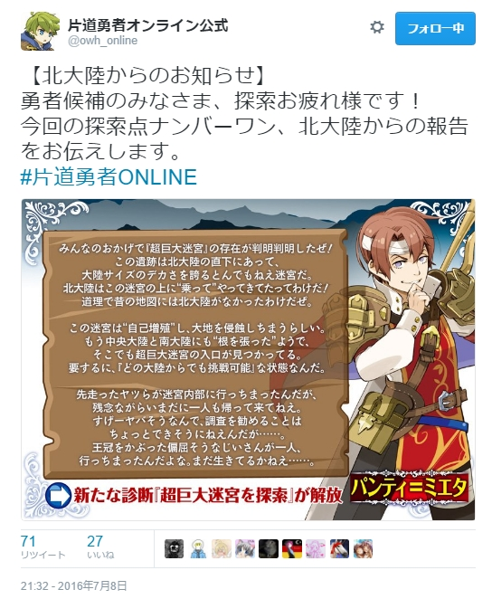
| 【北大陸の新情報】
北大陸の下には大陸サイズの超巨大迷宮が存在した……だと！ とんでもない事実が判明判明したな、傭兵パンティ！ 大事なことなので二回言ったというやつか！
超巨大迷宮、楽しみだ！ 早速明日から行ってみるぞ！ |
【25日目】
【超／戦闘／探索6】 アルバート＠南は、変な形の鋼鉄の巨人の群れが生み出されている広間に出た。敵は無防備だ、徹底的に破壊して先へ進むならＬＰ－6、ＤＫ－9、伝説Ｐ＋8。去るならＬＰ＋2、ＤＫ＋1。 |
| 【アルバートの感想】
ぐあああまた名状しがたい何かだと！！
|
超巨大迷宮に入った俺たち。そこに待ち受けていたのは、名状しがたき冒涜的な形状の鋼鉄の巨人の群れが生み出されている広間だった。
「うわあああーッ！ ……って待て、パーツの繋がりがグチャグチャだぞ！ 変な形の生物ならまだしも、機械っぽいものならただの製造ミスだろ！」
この工場……というのか？ とおぼしき場所を徹底的に破壊してしまえば、他の勇者候補たちも楽になるだろう。だが俺にはもう、そんな体力も時間も残されていなかった。
「しまったな、まず回復が必要か……二人とも、ここは退こう」
「……はい」
「ヴォー」
地上に出た俺は街で《癒しのアンプル》を買い、すぐ飲んだ。一日に購入できるオプションは空きスロット＋1個分なので今回の買い物はこれで終わりだ。
その後、ケガもしてないのにアイドル熊に治療を受けた。コナ王女が交代したいとうるさかった。こんな茶番もあと何日見られるのか。
◆選択 → 去る＋癒し手＋《癒しのアンプル》購入＆使用で、ＬＰ＋13、ＤＫ＋1、伝説Ｐ－15
【ｽﾃｰﾀｽ】 LP：6→19 DK：8→9 伝説P：34→19
【ｵﾌﾟｼｮﾝ】 《仲間：頼れるペット》＝コナ王女、《仲間：優しき癒し手》＝熊、《エルザイト爆弾》
【ｽﾃｰﾀｽ】 LP：6→19 DK：8→9 伝説P：34→19
【ｵﾌﾟｼｮﾝ】 《仲間：頼れるペット》＝コナ王女、《仲間：優しき癒し手》＝熊、《エルザイト爆弾》
【26日目】
【超／入手／探索1】 アルバート＠南は、戦いの中で急に調子を取り戻した！ 君のクラスの《初期オプション》から好きなものを1つ取得してよい。 例：海賊なら《◆強打》か《◆開錠》のどちらか1つ。 |
| 【アルバートの感想】
さらなるオプション入手……転機が来たか！
|
「コナ王女、今また、癒し手の役を頼みたいと考えてるんだが……」
俺は以前の話をもう一度切り出した。今ならどうだ！？
「……実は私もそう考えていました。癒し手なら堂々とスキンシップができ――ゴホン！ ペットよりお役に立てる機会が増えますし……」
「本当か！？ 助かる、コナ王女！ となるとアイドル熊はペットに……」
「ヴォー（ごめんなさい。私、やっぱりあなたのペットにはなれないみたい。それにこの南大陸は暑くて死にそうだったし、本当はそろそろ帰りたいなって思ってたところなの）」
「……そうか」
「ヴォー（気にしないで。ちょうどいいタイミングだし、ここで故郷に帰るわ。二人ともお幸せにね……冒険、楽しかったわよ）」
アイドル熊は去っていった。どこか寂しそうな、でも肩の荷が下りたような後ろ姿。知らぬ間に苦労をかけさせすぎていたのかもしれない。
「ありがとう…おまえのこと、一生忘れないからな！」
アイドル熊は振り向いて一回うなずき、去っていった。
だがこれでよかったのだろうか？ その迷いを残したせいか、次の敵との戦いはどこかガムシャラになってしまった。あいつのことが忘れられなかったのだ。
戦いで己への憤りにも近い感情が湧いた瞬間、俺は《◆強打》の技を思い出した。そういえば、この猛々しい一撃をこの旅で最初にぶつけた相手こそ、まさにあのアイドル雪原クマだったのだ。
「世界が平和になったらまた会おう……」
そう決意し、俺は歩を進めた。
◆選択 → コナ王女がついに癒し手になり、《仲間：頼れるペット》消滅。熊と別れ、彼女との思い出の《◆強打》を再び得た！
【ｽﾃｰﾀｽ】 LP：19 DK：9 伝説P：19
【ｵﾌﾟｼｮﾝ】 《仲間：優しき癒し手》＝コナ王女、《エルザイト爆弾》、《◆強打》
【ｽﾃｰﾀｽ】 LP：19 DK：9 伝説P：19
【ｵﾌﾟｼｮﾝ】 《仲間：優しき癒し手》＝コナ王女、《エルザイト爆弾》、《◆強打》
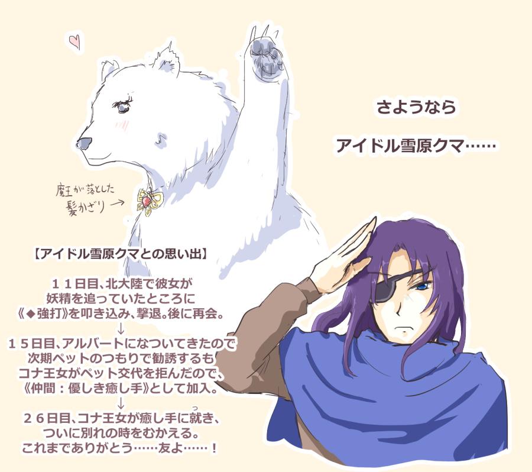
{kind=link}
| 【アルバートの感想】 アイドル雪原クマとの2週間ほどの冒険……道中は治療と称してなめられまくった記憶しかないが、楽しかったぞ、アイドル雪原クマ……！ |
【27日目】
【南／戦闘☆／探索5】 アルバート＠南は大グモの巣で、首から下が繭に包まれた元気な亡国の姫を発見した。大グモの群れに襲われながら繭から救出するならＬＰ－7、伝説Ｐ＋5。逃げ出すならＤＫ＋3。 |
| 【アルバートの感想】
20日ぶりに亡国の姫！
|
俺がコナ王女とはぐれてから5時間が経とうとしていた。途中までコナ王女の足跡を追跡したが、それさえも見失ってしまった。だが、敵が大グモであることに気付けばその先の目星を付けるのは容易だった。
クモの足跡を辿って着いたのは、やはり大グモの巣だった。
俺は大グモの巣に慎重に忍び込んだ。その深部に、首から下が繭に包まれたコナ王女がいた。
あの繭に包まれたまま時間が経つと、体が変異し、大グモの仲間にされてしまうという。コナ王女をそんな目に遭わせてたまるか……！
俺はコナ王女に駆け寄った。
「大丈夫か、コナ王女！」
「あっ、アルバート様！ 助けに来てくださると信じていました！ フンンン！！」
捕まっている割にコナ王女は猛烈に元気だった。
「すぐ助ける！ 腕さえ出せれば……よし！」
俺が慎重に繭を切り裂くと、コナ王女の腕が露出した。
「あとは自力で裂いてくれ！ 俺は客の相手をする！」
俺はコナ王女の手に短剣を持たせ、後ろに向き直った。すでに大グモの群れが俺たちを取り囲んでいた。
「これでも喰らえ、《◆強打》！」
俺は斧を振り回し、コナ王女が繭から抜け出すまでの時間を稼いだ。
その後、俺たちはなんとか大グモの巣から脱出できた。今日から癒し手となったコナ王女に回復を頼む。
「最初の治療が、私のせいでできてしまった傷なんて……」
「いやいやケガはしてないから！ だがまあ……頼む」
茶目っ気を出す気分でないのか、今日の処置は普通だった。
◆選択 → 《◆強打》使用でＬＰ減を10軽減し無傷、伝説Ｐ＋5、癒し手でＬＰ＋1
【ｽﾃｰﾀｽ】 LP：19→20 DK：9 伝説P：19→24
【ｵﾌﾟｼｮﾝ】 《仲間：優しき癒し手》＝コナ王女、《エルザイト爆弾》
【ｽﾃｰﾀｽ】 LP：19→20 DK：9 伝説P：19→24
【ｵﾌﾟｼｮﾝ】 《仲間：優しき癒し手》＝コナ王女、《エルザイト爆弾》
| 【アルバートの感想】 この際だ、最後まで生き残るぞ！ |
【28日目】
【超／危機／探索4】 敵に追われ、アルバート＠南と好色な詩人は暗くて狭い部屋に逃げ込んだ。息を殺して敵が去るのを待つ。少し待って包囲網を突破するならＬＰ－4。完全に去るのを待つならＤＫ－3。 |
| 【アルバートの感想】
むむ、好色だと……！？
|
俺たちが敵の群れから逃げ回っていると、途中でイケメンの男詩人を発見した。彼も連れて、暗くて狭すぎる部屋に逃げ込む。詩人が言った。
「ンーこういう状況になると大人向けの展開が来そうな雰囲気になりません！？」
「ならん！ おまえコナ王女から離れろ！」
「私は眼帯のあなたの方にも興味があるんですよ！？」
「マジか！ おまえ男だろ！ 好きになった男ならまだ許すが好きでもない男に言い寄られるのはアウトだ！」
「アルバート様……男でも許しちゃうんですか！？ 実はそっち系なんですか！？」
「うおお違う！！」
「実はそっち系でしたら、アルバート様が私に女としての興味をお持ちでなさそうなのも納得です！」
「だから違うって言ってるだろ！」
「オーこれは男の私も相思相愛のチャンス！？」
「やめろ！ こんなところにいられるか！ 俺は廊下に帰るぞ！」
俺はほんの少し待っただけで部屋を抜け出し、薄くなった包囲網を強行突破した。
「ンー残念ですねー、脱出できてしまいましたー」
「よかったな！ じゃあな！」
俺は性別を問わない好色な男詩人に別れを告げ、逃げるように去った。コナ王女がぽつりと言った。
「アルバート様、私が今度生まれ変わるときは男になりますね……」
「違う！ コナ王女に対してはその……照れてるだけなんだ、信じてくれ！ 俺は平均程度には女性に興味がある！」
「……本当にー？」
くっ、このままだと俺が男好きだと思われる……考えねば！
◆選択 → 包囲網突破でＬＰ－4、癒し手でＬＰ＋1し、計ＬＰ－3
【ｽﾃｰﾀｽ】 LP：20→17 DK：9 伝説P：19→24
【ｵﾌﾟｼｮﾝ】 《仲間：優しき癒し手》＝コナ王女、《エルザイト爆弾》
【ｽﾃｰﾀｽ】 LP：20→17 DK：9 伝説P：19→24
【ｵﾌﾟｼｮﾝ】 《仲間：優しき癒し手》＝コナ王女、《エルザイト爆弾》
| 【アルバートの感想】 俺は男好きではないぞ！ 本当なんだ、信じてくれ！ |
【29日目】
【超／宝箱／探索2】 アルバート＠南は、牢に捕まっている毛深い老婆を見つけた！ 鍵を開け、助け出すならＤＫ－5し、お礼に《ナユタの実》を取得。助けないならＬＰ＋2、ＤＫ＋1。 |
| 【アルバートの感想】
毛深い……老婆……？
|
俺たちが超巨大迷宮を進んでいると、牢を発見した。誰かいるだろうか……そう思いながら中を見ると、そこには人間サイズの毛玉のような物体があった。
「……生き物なのか、アレ？」
そうつぶやくと、毛玉はもそもそ動き出した。うわっ生きてる！
「おやおや、やっと救助が来てくれたんだねえ」
しわがれた声。
「その声……ご老体か？」
「そうだよ。あたしゃここに連れてこられて、それはもうひどいことされちまったんだよ」
「まさか、そんな毛玉みたいになったのも……？」
「これは元々だよ」
マジか。
「助ける……しかないだろうな」
闇が非常に近くまで迫っていたが、それでも、ここで助けなければ俺はずっと後悔するだろう。
「分かった、すぐ開ける。待っていてくれ」
俺は鍵の破壊に着手した。しばらくして、牢の鍵は無事に開いた。
「ありがとね、これをやるよ。最後の飯だけどもういらないからね」
毛玉の中から、モコモコの手がニュッと出て《ナユタの実》を渡された。
「あ、ああ……助かる」
「じゃあね、がんばるんだよ」
老婆は毛を引きずって歩いて行った。種族さえ分からなかった。
帰り道、コナ王女が聞いた。
「アルバート様は、どうしてご自分が辛いときでも人助けができるのですか？」
「目の前にいる者を助けられなかったら、俺の心がもっと辛くなる。それだけだ。これは、俺の弱さゆえなんだ」
俺たちは超巨大迷宮の探索を続けた。
◆選択 → 助け出しＤＫ－5、《ナユタの実》入手
【ｽﾃｰﾀｽ】 LP：17 DK：9→4 伝説P：24
【ｵﾌﾟｼｮﾝ】 《仲間：優しき癒し手》＝コナ王女、《エルザイト爆弾》、《ナユタの実》
【ｽﾃｰﾀｽ】 LP：17 DK：9→4 伝説P：24
【ｵﾌﾟｼｮﾝ】 《仲間：優しき癒し手》＝コナ王女、《エルザイト爆弾》、《ナユタの実》
| 【アルバートの感想】 そろそろDKが本格的にまずくなってきたな！ 興奮してきたぞ！ |
【30日目】
【超／宝箱／探索2】 アルバート＠南は武器庫らしい場所を見つけた。しかし扉には頑丈な鍵がかかっている。扉をなんとか開けるならＤＫ－8し、《伝説の武具の断片》を取得。無視するならＬＰ＋2、ＤＫ＋1。 |
| 【アルバートの感想】
DK残り4では無理か……！
|
俺たちが超巨大迷宮を進んでいると、武器庫らしい場所を発見した。だが闇は近い。この扉を破る頃には、俺たちは闇に呑まれてしまうだろう……。
「《伝説の武具の断片》が手に入りそうな気がするのに……くっ！」
「そんなことまで分かるんですか！？」
残念ながらコナ王女にはシステムメッセージのことを話しても分からないだろう。俺は武器庫を後にし、先へ進んだ。少しでも闇との距離を離さなければ。
「まあ、たまにはこういう日があってもいいか……」
そう、ただ健康と余裕を取り戻すだけの日があってもいい。
◆選択 → 無視してＬＰ＋2、ＤＫ＋1。早く「ナユもぐ」したいぞ！
【ｽﾃｰﾀｽ】 LP：17→19 DK：4→5 伝説P：24
【ｵﾌﾟｼｮﾝ】 《仲間：優しき癒し手》＝コナ王女、《エルザイト爆弾》、《ナユタの実》
【ｽﾃｰﾀｽ】 LP：17→19 DK：4→5 伝説P：24
【ｵﾌﾟｼｮﾝ】 《仲間：優しき癒し手》＝コナ王女、《エルザイト爆弾》、《ナユタの実》
| 【アルバートの感想】 ※「ナユもぐ」とは：『片道勇者』原案のＰＳ移植ゲーム、『不思議のクロニクル 振リ返リマセン勝ツマデハ』のネムリ嬢にナユタの実を食わせたとき、ボイスを飛ばすと主観で「ナユ、も、ぐ」と聞こえる気がするので「ナユもぐ」とは俺的にナユタの実をモグモグすることなのだ！ 本当にどうでもいいな！ |
| 【30日経過】
そしてついに開始から約30日が経ったぞ！ プレイしてくれているみんな、本当にありがとう！ あと10日ちょっとで最終イベント公開とのことなので、残りを何とか生き延びたいものだな。
俺のことだから、転生するとうっかり女になったりしかねん！ |
【31日目】
【超／交流／探索4】 アルバート＠南は、骨が散る通路で以前にも会った癒し手の亡骸を見つけた。短く祈りを捧げ、先に進む……。ＬＰ＋4、ＤＫ＋3。 |
| 【アルバートの感想】
なんだと……！
|
俺たちは、骨が散る通路に出くわした。超巨大迷宮の中はこんな場所ばかりだ。
だがそこに、血にまみれた白い毛の巨体が倒れていた。なぜか雪原クマが倒れていたのだ。
「まさか……！」
俺は慌てて近づいた。見慣れた顔、そして首には「魔王の髪飾り」……。
それはどう考えても数日前に別れた仲間の癒し手――アイドル雪原クマだった。
「嘘……だろ……」
俺はその場にひざを付いた。そうか。アイドル雪原クマは迷宮を通って北大陸に帰ろうとしたのだ。だが途中で……。
クマは、目を見開いたまま死んでいた。
アイドル雪原クマを一人で帰さなければよかった……俺は何ということをしてしまったんだ……！
「ああ……クマ！ クマァァ！」
俺はむせび泣いた。こんなことになるなら責任をもって北大陸まで船で連れていけばよかった……だがもう手遅れだ……。
俺は見開いたままのアイドル雪原クマの目を閉じさせて、少し祈り、髪飾りを形見として預かった。
「行こう……時間がない」
しばらくの後、コナ王女が言った。
「私が死んだら……きっと生まれ変わってアルバート様に会いに来ます。約束ですから」
「……ああ」
◆選択 → 祈りを捧げ、ＬＰ＋4、ＤＫ＋3。泣きながら《ナユタの実》を食べ、さらにＬＰ＋8、ＤＫ＋2。
【ｽﾃｰﾀｽ】 LP：19→23→31 DK：5→8→10 伝説P：24
【ｵﾌﾟｼｮﾝ】 《仲間：優しき癒し手》＝コナ王女、《エルザイト爆弾》、《ナユタの実》
【ｽﾃｰﾀｽ】 LP：19→23→31 DK：5→8→10 伝説P：24
【ｵﾌﾟｼｮﾝ】 《仲間：優しき癒し手》＝コナ王女、《エルザイト爆弾》、《ナユタの実》
| 【アルバートの感想】 これがこの世界の有り様なのか……すまん、熊……。 こんな日に食うナユタの実はすっぱいな……。 |
【32日目】
【南／危機☆／探索6】 アルバート＠南は凍った湖で大グモの巣へ乗り込むフリーダ王女を発見！ 覚悟して同行するならＬＰ－7、ＤＫ－2、伝説Ｐ＋6。無事を願うならＤＫ＋3。 |
| 【アルバートの感想】
南大陸にフリーダ王女も来てるのか！
|
アイドル雪原クマを失った失意の中、俺たちはなんと大グモの巣へ単身乗り込もうとしているフリーダ王女に出会った。
「あなたも勇者候補の方ですね。よければご助力をお願いします」
フリーダ王女は返事も聞かずに先に行ってしまった。コナ王女がこちらを見る。
「えーと……どうしましょう？」
「俺は人助けをしなかったことは一度もない……それにネムリ嬢がいるかもしれん、行こう！」
「そういえば以前、たくましい尻尾が国宝級だとおっしゃってましたね。私、次は尻尾を生やします！」
「次ってなんだ！？ 変なキャラメイク成分を溜めるんじゃあない！」
俺たちはフリーダ王女についていくことになり、大グモの巣から囚われの者たちを救助した。敵の中には強力な人面グモもいたが、すでに一流の大グモスレイヤーと化していたフリーダ王女の前では敵ではなかったらしい。
俺の仕事は、脇の大グモを排除するだけだった。
「ありがとうございます、おかげで多くの人を助けられました。それでは、また……」
フリーダ王女は俺たちに礼を言うと、次の獲物を探して去っていった。
「ネムリさん、ここにはいませんでしたね……」
「ああ。まだ間に合うのか、それとも……いや、何でもない」
「それはそうと、気になることがある」
俺は南大陸にしてはあまりに珍しすぎる、巣のそばの「凍った湖」を指した。
「これ……ランダム地形をミスって入力してるんじゃ――」
「しーっ！！」
俺は運営の人に修正依頼することを決意し、その場を離れた。
◆選択 → 同行＋癒し手でＬＰ－6、ＤＫ－2、伝説Ｐ＋6
【ｽﾃｰﾀｽ】 LP：31→25 DK：10→8 伝説P：24→30
【ｵﾌﾟｼｮﾝ】 《仲間：優しき癒し手》＝コナ王女、《エルザイト爆弾》
【ｽﾃｰﾀｽ】 LP：31→25 DK：10→8 伝説P：24→30
【ｵﾌﾟｼｮﾝ】 《仲間：優しき癒し手》＝コナ王女、《エルザイト爆弾》
| 【アルバートの感想】 割とギリギリの状態だが人助けは欠かしていないぞ！ ランダム地形の設定が怪しい件に関しては運営の人にきっちり報告しておいた。 |
↓
https://twitter.com/owh_online/status/754318361522151424
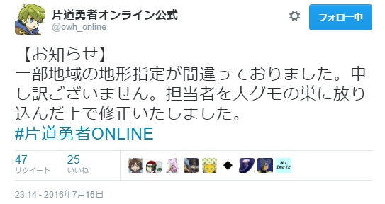
| 【担当者更新のお知らせ】
そんなつもりはなかったのにまた担当者が犠牲になってしまったのか！ 片道勇者オンライン公式運営は大変だな……次の担当者は完璧で幸福であることを祈ろう。
|
【33日目】
【街／休息】 アルバート＠南は酒場で休むことにした。マゾな女衛兵が隣に座ってきて、話をした末にいい雰囲気になった。ＬＰ＋6、ＤＫ－1、伝説Ｐ＋3。どんな会話をしたか描写するとさらにＬＰ＋1。 |
俺は昨日の大グモたちとの戦いの疲れを癒すため、街に来ていた。コナ王女と酒場のカウンターに座ってミルクを飲んでいると、俺の隣に女衛兵が座って言った。
「ねえ……お願いがあるんだけど」
「あ～、手短に頼む」
コナ王女は露骨にイヤそうな顔をしていた。
女傭兵の願いはこうだった。
「私を罵倒して欲しいの」
「え？ いや待て！ 俺がそんなに罵倒が好きそうに見えるのか！？」
いや、何か理由があるに違いない……そう俺は考えたが、この女衛兵はただのマゾだった。
「うーん……罵倒か……うーん……！」
俺は罵倒が得意ではない。そもそも罵倒語は文化にひも付くものだ。ただの鶏という呼び方が「臆病者」を意味する土地さえある。だがここの知識は俺にはなかった。
「うーん……そんな要求をしてくる女にムコは来んぞ！ とか」
「えー、30点」
「くっ、ダメか！」
コナ王女が立ち上がった。
「分かりました……私がやりましょう。耳を貸していただけますか？」
コナ王女がドＭな女衛兵に何やら耳打ちすると、女衛兵は徐々に恍惚とした表情になった。
「あ、ああ……いいわ、最高ッ……人間としての尊厳が崩壊しそう……！」
一体何と言って罵倒したんだコナ王女は……だがそれを確認する勇気は俺にはなかった。
「あー、コナ王女、助かった」
「いいえ、アルバート様のためですから」
ああ、これでいい。女同士の本気の罵倒なんて聞きたくない。俺は綺麗な言葉だけで生きていくんだ！！
◆選択 → 描写してＬＰ＋7、ＤＫ－1、伝説Ｐ＋3。
さらに《周辺の地図》も買って使い、ＤＫ＋5、伝説Ｐ－10
【ｽﾃｰﾀｽ】 LP：25→32 DK：8→7→12 伝説P：30→33→23
【ｵﾌﾟｼｮﾝ】 《仲間：優しき癒し手》＝コナ王女、《エルザイト爆弾》
さらに《周辺の地図》も買って使い、ＤＫ＋5、伝説Ｐ－10
【ｽﾃｰﾀｽ】 LP：25→32 DK：8→7→12 伝説P：30→33→23
【ｵﾌﾟｼｮﾝ】 《仲間：優しき癒し手》＝コナ王女、《エルザイト爆弾》
【34日目】
【超／戦闘／探索5】 アルバート＠南が部屋を覗くと、賞金首のガイコツの群れが踊っていた。奥には宝が！ 全滅させるならＬＰ－7、ＤＫ－2し《癒しのアンプル》を取得。去るならＬＰ＋2、ＤＫ＋1。 |
| 【アルバートの感想】
普通に戦闘だ！
|
こっそり部屋を覗くと、そこには賞金首どものガイコツが踊っていた。誰が誰かまったくわからんが、壁に生前のものとおぼしき数々の指名手配ポスターが貼ってあったのでたぶんそうだろう。奥には宝箱があった。
「やるか……コナ王女、後で治療を頼む」
「はい！」
俺だって一人の傭兵であり冒険家だ、宝を狙って何が悪い。俺は斧を持ってガイコツどもの群れに斬り込んだ！
「うおおおーっ！！」
「ホネーッ！」
その後、五分と経たずに骨の群れは全てバラバラになった。まだクモの方が歯ごたえがあったかもな。
守られていた宝箱の中にあったのは《癒しのアンプル》だった。
「疲れたし、もらうとするか……ゴクッ。うむ、ファイト一発な感じだな！」
俺は成果に満足して部屋を出た。コナ王女に治療してもらい、迷宮の探索を続ける。ああ、これこそ普通の冒険だ……いい！
◆選択 → 戦って、癒し手を使用しＬＰ－6、ＤＫ－2、入手した《癒しのアンプル》をすぐ使用しＬＰ＋10
【ｽﾃｰﾀｽ】 LP：32→26→36 DK：12→10 伝説P：23
【ｵﾌﾟｼｮﾝ】 《仲間：優しき癒し手》＝コナ王女、《エルザイト爆弾》
【ｽﾃｰﾀｽ】 LP：32→26→36 DK：12→10 伝説P：23
【ｵﾌﾟｼｮﾝ】 《仲間：優しき癒し手》＝コナ王女、《エルザイト爆弾》
【35日目】
【南／戦闘／探索2】 アルバート＠南は月下の海岸でイカした野犬を発見した！ 相手はたかが犬、たいした相手じゃない！ 戦って突破するならＬＰ－3、ＤＫ＋2。迂回するならＬＰ＋4、ＤＫ－2。 |
「ガルルル……」
目の前には鎖をジャラジャラ身に付けたパンクな野犬がいた。少し防御力が高そうだ。避けることもできそうだが、俺たちには時間がない。
「行くぞ野犬！」
俺は野犬に斬りかかる。決着は一瞬だった。立っていたのは、もちろん俺の方だ。
野犬を倒した俺は少し先へ進んでから、コナ王女に治療してもらうことにした。軽く傷を負ってしまったのだ。
「アルバート様……この旅は、いつまで続くのでしょう」
「さあな。だが、そう長くは続かないと思う」
「……」
俺たちの間に、妙な沈黙が降りた。
二人とも、別れの時が近いことを予感していた。
「ずっと旅していたい……というのは、ワガママでしょうか」
「……こんな旅だ、いつ別れが来るか分からない。だから今を大事にするんだ。俺は今に満足しているぞ」
俺は笑った。コナ王女も、つられてほほえんだ。
◆選択 → 戦って、癒し手を使用しＬＰ－2、ＤＫ＋2
【ｽﾃｰﾀｽ】 LP：36→34 DK：10→12 伝説P：23
【ｵﾌﾟｼｮﾝ】 《仲間：優しき癒し手》＝コナ王女、《エルザイト爆弾》
【ｽﾃｰﾀｽ】 LP：36→34 DK：10→12 伝説P：23
【ｵﾌﾟｼｮﾝ】 《仲間：優しき癒し手》＝コナ王女、《エルザイト爆弾》
| 【アルバートの感想】 実はこの頃に強力になった魔王イベントも開催中だったんだが、俺はリソースとリアル時間がなかったのでやらなかったんだ。 終了後の今でも開催中なので、気になる者はぜひ挑戦してくれ！ |
【探索レポート】
https://twitter.com/owh_online/status/755380774061211653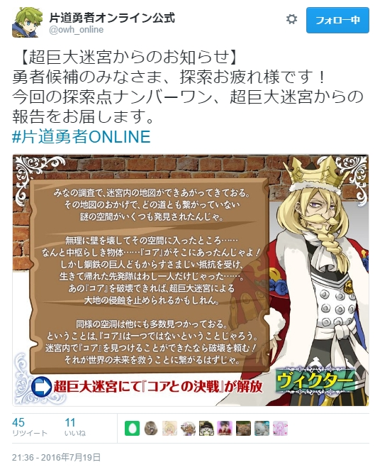
| 【超巨大迷宮・新情報！】
一人だけ生きて帰ったとかこの老人やるな……そして超巨大迷宮には『コア』があるらしいぞ！ 俺も状態を見つつ迷宮を探索してみる！
そしてネムリ嬢は一体どうなってしまったんだ！ クモ化したのか！？ |
【36日目】
【超／戦闘☆／探索4】 アルバート＠南は、暗い拷問部屋で鋼鉄の巨人と戦うヴィクターを発見！ 共に戦うならＬＰ－8。軍師役を務めるならＤＫ－4。どちらも伝説Ｐ＋7。 |
| 【アルバートの感想】
こんなところにヴィクター王だと！？
|
俺たちが入ったのは、血に塗れたベッドと刺々しい様々な器具が置いてある拷問部屋だった。そこではヴィクター王が廊下から侵入してこようとする鋼鉄の巨人に応戦していた。
「おお、勇者候補の者か！ 力を貸してくれんか！」
「もちろんだ！」
俺は斧を振り上げ、廊下から伸びる巨人の腕に一撃を加えた！ 手を叩き斬った…と思ったら手だけがそのまま部屋に侵入し、俺たちに襲いかかる！
「くそ、これは切っても動くやつか！」
「外のは任せるんじゃ、入ってきたのを頼む！」
俺は手の排除を担当した。
結局、外の鋼鉄の巨人の装甲が溶けるまでヴィクターは火炎を撃ち続け、俺は動き回る手をバラバラにしてようやく戦いは終わった。
「ふー、なんとかなったの。すまぬな」
「いや……俺が邪魔しただけみたいだったぞ」
俺はそう言ったが、王は感謝して礼をくれた。
コナ王女に傷を治療してもらい、先へ進む。礼としてもらった袋を見ると、中には銀貨とフリーダ王女の小さな肖像画が入っていた。
「……この肖像画も報酬……なのか？」
「すまんすまん！ その中に銀貨以外も入っておったので返してくれんか」
「ああ、これだな」
俺は肖像画をヴィクター王に返した。
ヴィクター王と別れ、歩き始めたときにコナ王女が言った。
「あの……この戦いが終わったら私の肖像を描いてもらって、アルバート様に持っていただくのはどうでしょう」
「え？ あ、ああ、そうだな、嬉しいかもな」
コナ王女にしては控えめなお願いだったので、俺は戸惑った。
だが確かに、これからもずっと一緒にいることはできないのだ……。
◆選択 → 戦って、癒し手を使用しＬＰ－7、伝説Ｐ＋7
【ｽﾃｰﾀｽ】 LP：34→27 DK：12 伝説P：23→30
【ｵﾌﾟｼｮﾝ】 《仲間：優しき癒し手》＝コナ王女、《エルザイト爆弾》
【ｽﾃｰﾀｽ】 LP：34→27 DK：12 伝説P：23→30
【ｵﾌﾟｼｮﾝ】 《仲間：優しき癒し手》＝コナ王女、《エルザイト爆弾》
| 【アルバートの感想】 旅の終わりも近い。別れのときのことも考えないとな……。 |
【37日目】
【超／危機／探索5】 共に歩いていた毛深い騎士がスライムに飲み込まれた！ 服だけ溶かすスライムだ！ アルバート＠南の手で助け出すならＤＫ－3、伝説Ｐ＋4。自力で何とかしてもらうならＤＫ＋2。 |
| 【アルバートの感想】
なにこの嬉しくない展開……。
|
俺は迷宮で出会った獣人の男騎士と歩いていた。その瞬間、騎士が何かに包まれた！ これは……服だけ溶かすスライムだ！
「でも鎧は溶かさないし、おまえ毛皮があるから服が溶けても別にそんな問題ないよな」
「えっ、ひどいぞ、この海賊め！」
「俺たちは人間だからな……うっかり触って服が溶けると困るんだ。特に隣の女性は」
俺はコナ王女を指した。
「くそおおお！ 獣人差別だぞ！」
「分かった！ ここで見ててやるから何とか抜け出してくれ！ まずそうなら助けるから！」
「薄情者ー！」
「だが私は負けぬ！ ぬおー！！ あっ」
獣人の騎士ががんばると、驚くほどあっけなくスライムから抜けてしまった。
「おお、すばらしい働きだな！」
「さすがですね騎士様！」
「え……そ、そうだろう！ うむ！ では先へ進むぞ」
獣人の騎士は扱いやすかった。
◆選択 → 自力で何とかしてもらいＤＫ＋2、癒し手でＬＰ＋1
【ｽﾃｰﾀｽ】 LP：27→28 DK：12→14 伝説P：30
【ｵﾌﾟｼｮﾝ】 《仲間：優しき癒し手》＝コナ王女、《エルザイト爆弾》
【ｽﾃｰﾀｽ】 LP：27→28 DK：12→14 伝説P：30
【ｵﾌﾟｼｮﾝ】 《仲間：優しき癒し手》＝コナ王女、《エルザイト爆弾》
| 【アルバートの感想】 女性がスライムに包まれたなら大至急助けました、本当です。 |
【探索レポート】
| 【新情報、ネムリ嬢が帰ってきた！】
うおおお、みんなの探索のおかげでネムリ嬢が無事帰還したぞ！ たくましい国宝級の尻尾は守られたのだ！ 今後は南大陸でボスらしき女王グモと戦えるようだな、みな気をつけてくれ！
|
https://twitter.com/owh_online/status/756085713179807745
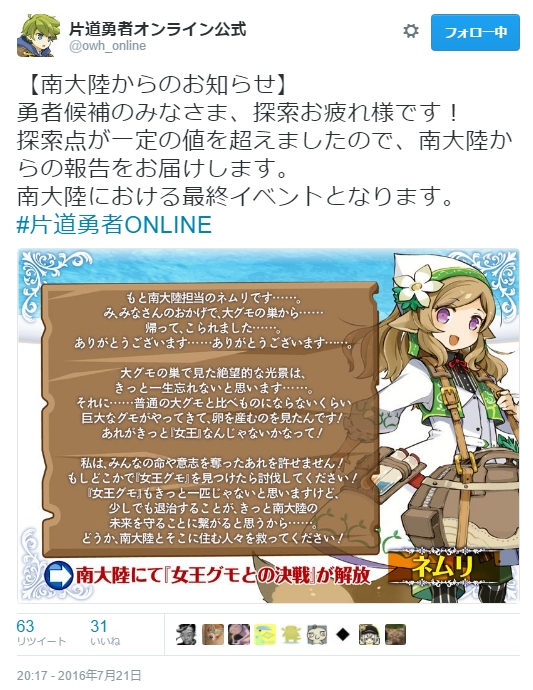
| 【ネムリ嬢について】
しかし原作では（ピー）になったりオンラインでは人面グモにされかけたりと、ネムリ嬢はやたら体型変化系の不幸に巻き込まれるな！ クモになったネムリ嬢なんて一部の人は大喜びかもしれんが、俺は喜ばないぞ！
|
【38日目】
【超／入手☆／探索1】 アルバート＠南は暗い拷問部屋にて、壊れた鋼鉄の巨人から《覚醒の石》を発見！ 望むならこのオプションを取得できる。取得しないなら伝説Ｐ＋6。 |
| 【アルバートの感想】
おお、ここに来ていいものが出たな。
|
俺は超巨大迷宮で道に迷ったあげく、拷問部屋へたどりついた。
「コナ王女……『拷問してくださってもいいんですよ』とか言うのはナシだからな」
「そんなこと言いません！」
言いそうだ。それはそうと、拷問部屋には装甲が溶けかけた鋼鉄の巨人が倒れていた。
「ヴィクター王が倒したのか？ 王は拷問部屋で戦うのがお好きなようだ……ん？」
鋼鉄の巨人の内部を見ると、 輝く石を見つけた、これは……。
「《覚醒の石》か！」
生き物の新たな力を目覚めさせるとかそんな石だった気がする。まさか実際にこの目で見られるとは。
俺は早速コナ王女に《覚醒の石》を使ってもらうことにした。
「それはいいんですが……変な方向に目覚めちゃったらどうしましょう……」
「変な方向ってどっちの方向だ！？」
コナ王女が念じると《覚醒の石》が輝き出し、光がコナ王女を包み込んだ。
覚醒したコナ王女は一見何の変化も起きなかったように見えたが、触るだけで治療が可能になっていた。理力に目覚めたのだろうか。
早速試しに治療を頼んでみたら、加減を失敗したのか俺は鼻血を出した。べ、別にコナ王女にベタベタ触られて興奮したわけではないぞ！ 本当だ！
◆選択 → 《覚醒の石》を入手、すぐ使い《仲間：優しき癒し手＋1》に
【ｽﾃｰﾀｽ】 LP：28 DK：14 伝説P：30
【ｵﾌﾟｼｮﾝ】 《仲間：優しき癒し手＋1》＝コナ王女、《エルザイト爆弾》
【ｽﾃｰﾀｽ】 LP：28 DK：14 伝説P：30
【ｵﾌﾟｼｮﾝ】 《仲間：優しき癒し手＋1》＝コナ王女、《エルザイト爆弾》
| 【アルバートの感想】 治療を行う演出が入ったが、この診断結果は【戦闘】でも【危機】でもないので数値には変化はないぞ。《仲間：優しき癒し手》は【戦闘】か【危機】のときだけ使えるオプションなんだ。 |
【39日目】
【超／交流／探索6】 アルバート＠南は、静かな通路で病弱な海賊と遭遇。どうやら隠し通路を探しているようだ。一緒に探すならＤＫ－3、伝説Ｐ＋5。先を急ぐならＬＰ＋2、ＤＫ＋2。 |
| 【アルバートの感想】
病弱な海賊……。
|
「ゴホゴホッ、よおそこの同類さんよ、一緒に隠し通路探さねえかい？」
見ると、病弱な海賊が静かな通路で壁を探っていた。同類って……ああ、そういえば俺もいま海賊だっけ。
「闇も近いので迷うが……いいか、手伝おう。宝は山分けだぞ」
「それでいいぜ……ゴホゴホ！」
一緒に壁を探っている最中、海賊から昔話を聞かされた。
「俺……国に帰ったら女が待っててよぉゴホゴホ」
「おまえもう死にそうなのにそんなフラグ立てたら死ぬぞ！」
「ところがその国がもう呑まれちまってよぉ」
「そ、そうなのか……それは悲しすぎるな……」
「おまえはそこの子を大事にしろよな、ゴホゴホ……」
「い、いや、そういう関係ではない！」
「そういうのじゃなくても、お互いに思いやりがあるなら大事にすべきだぜ……おっと、出たぜ」
海賊がレンガを1つ外すと、隠し通路のレバーが出てきた。
隠し通路の先にあったのは、迷宮内で死んだ旅人から回収したのであろう、荷物の山だった。
「山分けだ。俺はおまえのいらない物をもらうぜゴホッゴホ」
「それ山分けって言わないぞ、いいのか？」
「いいさ、俺も長くはもたねえしさ……話、聞いてくれてありがとよ」
そうは言っても持てる分には限度がある。俺たちは価値のありそうな武具や貴重品をいくらかもらい、そこで別れた。
「せめていいものを食えよ、海賊！ 元気でな」
「ああ、その子を大事にしろよ、眼帯！ ゴホッ」
コナ王女は笑顔でうんうんとうなずいていた。
◆選択 → 隠し通路を探してＤＫ－3、伝説Ｐ＋5
【ｽﾃｰﾀｽ】 LP：28 DK：14→11 伝説P：30→35
【ｵﾌﾟｼｮﾝ】 《仲間：優しき癒し手＋1》＝コナ王女、《エルザイト爆弾》
【ｽﾃｰﾀｽ】 LP：28 DK：14→11 伝説P：30→35
【ｵﾌﾟｼｮﾝ】 《仲間：優しき癒し手＋1》＝コナ王女、《エルザイト爆弾》
| 【アルバートの感想】 コナ王女の＋1が活かせないまま終わりそうな気がしてきたぞ！ |
【40日目】
【街／交流】 闇が迫る中、アルバート＠南は賭場を見つけた。そこでセクシーな癒し手と出会う。一緒に賭けを楽しんでいくならＤＫ－7、伝説Ｐ＋9。先を急ぐならＬＰ＋3、ＤＫ－1、伝説Ｐ＋3。 |
| 【アルバートの感想】
おお、懐かしい展開だな！
|
休息のために街にやってくると、賭場の入口で癒し手に出会った。癒し手といっても、スカートのすそは短いし胸元もだらしないしで、本当に癒し手か怪しいのだが。
「あのぉ、一緒に遊んでいきませんか？」
癒し手が賭場を指さして言うが、コナ王女が前に出た。
「すみませんが、今は遊ぶ時間がないのです」
「私は後ろのお兄さんに聞いてるんですぅ～」
イヤな状態だなおい。だが時間がないのは確かだった。
「悪いが、お楽しみには困ってないんだ」
「やだーそういう遊びしてるんですかぁ！？ 不潔ぅー」
「違ーう！」
なんとかやり過ごし、先へ進む。
「賭場といえばコナ王女と初めて会ったときを思い出すな」
「……あのときはすみません、話す口実ができるとついお誘いしてしまって」
だがそうしていなければ出会いもなかっただろうし、コナ王女も人生を終わらせていたはずだ。
「しかし、なぜあのとき俺を誘ったんだ？ 明らかにカタギではなさそうな見た目だぞ、俺」
「えっ、それは……私に言わせないでください！ アルバート様ならお分かりに……は、ならないですよね、たぶん……」
まあ、表面上は朴念仁のつもりだからな、俺。
「私は、強い人に憧れていたのかもしれません。たとえ、少し道を外したような人でもよくて……それでいて、根は優しそうな人に」
それで俺を狙ったのなら、人を見る目はあるのかもしれない。
「と理由を付けることはできますが……」
コナ王女は俺をうるんだ瞳で見ていた。
「単純に言うと……ときめいてしまったんです……！」
「そ、そうか。俺も結局、無視はできなかった」
だが、こうした出会いが最終的に幸福に繋がらないこともある。別れのときがまもなく来るはずだ。そのとき、俺は……。
◆選択 → 先を急いでＬＰ＋3、ＤＫ－1、伝説Ｐ＋3
【ｽﾃｰﾀｽ】 LP：28→31 DK：11→10 伝説P：35→38
【ｵﾌﾟｼｮﾝ】 《仲間：優しき癒し手＋1》＝コナ王女、《エルザイト爆弾》
【ｽﾃｰﾀｽ】 LP：28→31 DK：11→10 伝説P：35→38
【ｵﾌﾟｼｮﾝ】 《仲間：優しき癒し手＋1》＝コナ王女、《エルザイト爆弾》
| 【アルバートの感想】 ついに明日、最終イベントが公開される……。 |
【41日目】
【南／入手☆／探索1】 アルバート＠南は草原の野営地にて、大グモだらけの洞窟で《覚醒の石》を発見！ 望むならこのオプションを取得できる。取得しないなら伝説Ｐ＋6。 |
| 【アルバートの感想】
最後の最後がこれか、もう記念品だな……。
|
俺たちは草原の野営地にあった大グモの洞窟に入った。ネムリ嬢はすでに助かったとはいえ、まだ困っている者がいるはずだ……そう考えてクモと戦いながら洞窟を進んだが、要救助者は見つからなかった。しかし代わりに一つのものを発見した。以前も見た《覚醒の石》だ。
使ってみようとしたが、残念ながら俺をアルバート＋1にはできないようだ。
「この《覚醒の石》、俺には使えないな……だが、記念にもらっていこう。この世界のなごりが一つくらいあってもいい」
「なごり、ですか……」
それは、俺がこの世界を離れる前提の言葉だった。
「アルバート様……この戦いが終わったら、次の地へ行かれてしまうのですか？ 私は、ご一緒することはできませんか？」
「……できないだろうな。他者と共に世界の移動ができないか以前にも試したんだが、残念ながらうまくいかなかった」
「世界の、移動？」
「そもそも俺は、異世界から『時の扉』を越えてやってきた。一つ前にいた闇に呑まれつつある世界にも『時の扉』があったし、通ってきた全ての世界にあった。となると、飛ばされた先であるこの世界にもきっと『時の扉』があるんだろう」
俺は話を続けた。
「俺は過去に一度、複数人で『時の扉』を通れないかと、試しに犬を抱いて『時の扉』を通ったんだ。そうしたら、犬だけいなくなっていた。つまるところ、『時の扉』は2つの命を同時に運ぶことはできないのだろう。俺の服や紙だって、元は命の一部なのにな……」
「アルバート様は元の世界に帰りたいのですね……再会したい人がいらっしゃるのですか？」
「ああ、いる。ここにとどまるのも悪くないという感情もあるが、戻るのを諦めるにはまだ早すぎるんだ」
コナ王女はうつむいた。俺に、今の表情を見せたくないようだった。
◆選択 → 《覚醒の石》を入手。
【ｽﾃｰﾀｽ】 LP：31 DK：10 伝説P：38
【ｵﾌﾟｼｮﾝ】 《仲間：優しき癒し手＋1》＝コナ王女、《エルザイト爆弾》、《覚醒の石》
【ｽﾃｰﾀｽ】 LP：31 DK：10 伝説P：38
【ｵﾌﾟｼｮﾝ】 《仲間：優しき癒し手＋1》＝コナ王女、《エルザイト爆弾》、《覚醒の石》
【探索レポート】
https://twitter.com/owh_online/status/757550821978484740 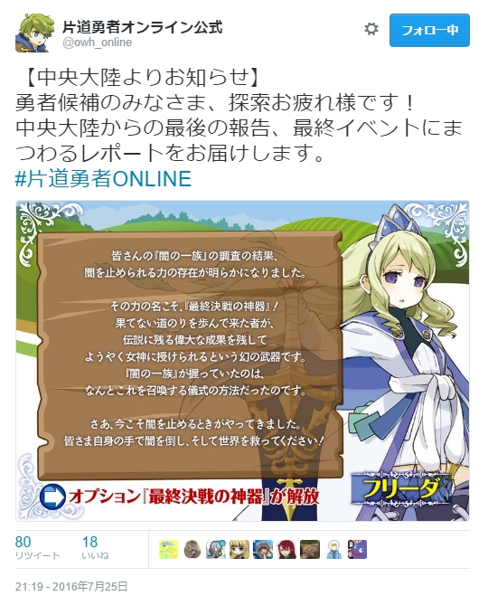| 【最終イベント公開！】
ついに最終イベントが公開されたぞ！ この冒険を終わらせるのは君の任意だ。
最終決戦に挑みたい者はオプションの『最終決戦の神器』を購入し、説明文にある決戦イベントをツイートしてくれ！ 俺も明日、行くぞ！ |
【42日目】
【街／休息】 疲れていたのか、アルバート＠南は露天商が並ぶ道でいつの間にか眠ってしまっていた。君は以前に出会った、セクシーな女傭兵との夢を見た……ＬＰ＋8、ＤＫ－3、伝説Ｐ＋2。 |
| 【アルバートの感想】
決戦に備えて休息だ！
|
露天商が並ぶ店でコナ王女の買い物を待っていると、いつの間にか俺は眠ってしまっていた。夢に見たのは、前の街にいたやたらセクシーな女傭兵のことだった。え、そんな人物が片道勇者原案リメイク『不思議のクロニクル 振リ返リマセン勝ツマデハ』にいた？ なんのことかよくわからんな！
「……ルバート様……アルバート様！」
俺が褐色セクシー傭兵の夢を見ていると、コナ王女に起こされた。
「お待たせしました。さあ、行きましょう」
俺は目をこすって立ち上がった。
「ああ……目当てのものは見つかったか？」
「え、ええ……」
コナ王女が珍しくそわそわしている。買い物の内容を詳しく聞いた方がいいのかそうでないのか。女心は難しい。
「何を買ったか聞いてもいいか？」
「あの……そのうち話します」
どうやら聞いたのは外れだったようだ。俺は途中で《癒しの草》を買い、食った。
◆選択 → ＬＰ＋8、ＤＫ－3、伝説Ｐ＋2。《癒しの草》を購入し、すぐ使用でＬＰ＋5、伝説Ｐ－10
【ｽﾃｰﾀｽ】 LP：31→44 DK：10→7 伝説P：38→30
【ｵﾌﾟｼｮﾝ】 《仲間：優しき癒し手＋1》＝コナ王女、《エルザイト爆弾》、《覚醒の石》
【ｽﾃｰﾀｽ】 LP：31→44 DK：10→7 伝説P：38→30
【ｵﾌﾟｼｮﾝ】 《仲間：優しき癒し手＋1》＝コナ王女、《エルザイト爆弾》、《覚醒の石》
| 【アルバートの感想】 決戦の準備は整った。伝説P、３０点を使って《最終決戦の神器》を獲得しよう。 |
街を出ると、俺たちはフリーダ王女の情報にあった儀式の方法を試してみた。これで、闇を倒せるという《最終決戦の神器》が手に入るという。
手順通りにすると急に空に暗雲がうずまいてきた。嫌な予感がした瞬間、稲妻が目の前に落ち、辺りが白一色に包まれた！
おそるおそる目を開くと、地面には一本の大剣が突き刺さっていた。これが神器か！ 俺はその大剣を引き抜いた。戦いの準備はすでにできている。
「コナ王女……何が出てくるかわからんが、行くぞ！」
「はい！」
俺は闇の方角に向かって神器の剣を振るった。
◆選択 → 《最終決戦の神器》を購入、即使用し、伝説Ｐ－30。決戦の始まりだ！
【ｽﾃｰﾀｽ】 LP：44 DK：7 伝説P：30→0
【ｵﾌﾟｼｮﾝ】 《仲間：優しき癒し手＋1》＝コナ王女、《エルザイト爆弾》、《覚醒の石》
【ｽﾃｰﾀｽ】 LP：44 DK：7 伝説P：30→0
【ｵﾌﾟｼｮﾝ】 《仲間：優しき癒し手＋1》＝コナ王女、《エルザイト爆弾》、《覚醒の石》
【最終決戦】
【最終決戦／戦闘★】 君が闇に向かって《最終決戦の神器》を振るうと黒い霧が晴れ、山のごとき巨大な黒竜が現れた。最終決戦だ！ ＬＰ－60して生き残ることができれば勝利でき、世界は救われる！ 誰かの支援を得られれば1人あたりＬＰ減少を5軽減（最大5人分）。 |
俺が振るった一閃は、闇の霧を激しい勢いでかき消した。黒い霧の向こうにいたのは……巨大な黒竜だ！ だがサイズが尋常ではない！ まるで山一つ分だ！
「……だが今さら退く気はない！ 行くぞ！」
俺は神器を構えた、決戦だ！
闇の竜は暗黒の炎を吐き出して俺たちに攻撃してきた！ あれをかいくぐって傷を付けろというのは確かに難題だ……それでも！
俺は神器を構えて黒竜に迫った。近くで見るほどよく分かる、黒竜の体はまるで天高くそびえ立つ漆黒の壁のようだ！
俺はやっぱり街で買った弓に持ち替えて、ヤツの顔あたりをチクチク攻撃することにした。遮蔽物に隠れてブレスをかわしつつ矢で攻撃を加える。だが相手が大きすぎて効いている気がしない。
こんなとき支援があれば…と思ったがみんなクリア済みか！？ ヤバい！
俺は矢を撃ち尽くすまで連射した。矢が切れたとき、どこからともなく勇者候補の仲間がやってきた！ あれは乱戦で魔王の下着をチェックしようとした妖精の詩人！ 半獣人の冒険家もやってきてくれた！ 敵の注意を引きつけてくれるらしい！
「皆、助かる！」
どこかで俺の勝利を祈ってくれている誰かの声がする！ それが俺に戦う勇気を与えてくれる！
さらに人語を喋る黒猫と少年が駆けつけてくれた、半獣人と獣人の狩人も援護射撃をしてくれる！ これならいける！ 俺は神器を抜いて黒竜に迫った！
さらに支援を受けて黒竜に隙が生まれた。
「うおおおーーッ！」
俺は漆黒の壁に神器の一撃を叩き込む！ 光り輝く剣は俺の予想をはるかに超えて巨大な傷を与えた！
「グォォォー！！」
黒竜が叫びをあげて炎を吐いた。俺の体が暗黒の炎に包まれる！
このままではもたない。そのとき、神器が俺に何かを訴えた気がした。俺は直感のままに神器を闇の竜の頭に向かって投げつける。神器は俺の意図を汲んだのか、神器が望んだのか、神器の大剣は光の尾を残してまっすぐ加速し、黒竜の頭に飛翔していく！ なんかすごいぞ神器！
神器は首元を貫き、黒竜が断末魔を上げた。それが戦いの最後だった。闇の竜の姿勢がゆらいだと思うと、竜はそのまま倒れていく。
だが俺はヤツの最期を見届けることはなかった。俺は暗黒の炎に焼かれ、その場に崩れ落ちたのだ。最後に聞こえたのは、激しい地響きだけ……。
暗黒に閉ざされた中、誰かの祈りの声が聞こえた。同じ志を持つ仲間の声……そうだ、まだ死ぬわけには……。
意志を振り絞って目を開けると、目の前にあったのは俺を治療してくれているコナ王女の顔だった。その顔には涙の跡があった。
「アルバート様……？ アルバート様！ よかった……」
「俺は……生きてるのか」
コナ王女が覚醒した力で俺を治療してくれていた。周りには、共に戦ってくれた勇者候補たちがいた。みんなのおかげで、俺はまだ生きている。
「みんな……ありがとう……」
見れば黒竜は地に伏し、闇の障気は霧散しつつあった。長く苦しめられた闇の脅威が、ついに世界から取り払われたのだ！
こうして、俺たちの世界を救うための旅は終わりを迎えた……今はただ、休みたかった。俺は戦友たちに感謝を告げ、街へと帰還した……。
◆選択 → 黒竜戦でLP-60されるところを、総勢10名の支援を受けることができ、
ＬＰ軽減25、《仲間：優しき癒し手＋1》使用でＬＰ＋2。合計でＬＰ－33で生存！
【ｽﾃｰﾀｽ】 LP：44→11 DK：7 伝説P：0
【ｵﾌﾟｼｮﾝ】 《仲間：優しき癒し手＋1》＝コナ王女、《エルザイト爆弾》、《覚醒の石》
ＬＰ軽減25、《仲間：優しき癒し手＋1》使用でＬＰ＋2。合計でＬＰ－33で生存！
【ｽﾃｰﾀｽ】 LP：44→11 DK：7 伝説P：0
【ｵﾌﾟｼｮﾝ】 《仲間：優しき癒し手＋1》＝コナ王女、《エルザイト爆弾》、《覚醒の石》
【エンディング】
| 【アルバートから一言】
さて、最後の戦いが終わってから、この世界を離れるまでのことを語ろうと思う。これが、この世界での俺の最後の記録だ。
|
あの黒竜を倒した後、俺とコナ王女は再び旅を続けた。
俺は不運な事故によって元の世界から飛ばされ、異世界を次々に渡り歩いている身だ。俺は『時の扉』を探し出し、また元の世界への道筋を探さなければならないのだ。
そしてコナ王女との別れのときは、意外にも早く来た。
ほんの数日後、俺たちは奇跡的に『時の扉』を発見してしまったのだ。
ある法則に従って円形に配置された石柱群。ここで待っていれば、いつか扉は開かれるはずだった。
そして、その時はあっという間にやってきた。着いた途端、まるで俺を待っていたかのように石柱群の中央が輝き出したのだ。
「この『時の扉』にはすでに十分な力が溜まっていたのかもしれんな……コナ王女、前も言ったが、俺には帰るべき世界がある」
「……はい、分かっています」
「だが、もし行き来する手段が確立できたら、世話になった人々に礼を言いに来るつもりだ……もちろんコナ王女にも」
「……はい」
いつものコナ王女と比べると、驚くほど素直な対応だった。だが俺でさえ、彼女が無理しているのがよく分かった。
「あの、アルバート様……これを」
彼女が渡してくれたのは、中にコナ王女の細密な肖像が細工されたペンダントだった。ふたができるようになっている。
「アルバート様は私からあげられるものを何もお受け取りになりませんでしたけど……肖像画だけは『いいかもな』と言って下さったでしょう？」
「ああ、言っていたな」
「これならきっと、お邪魔にならずにおそばにいられると思いますから」
ペンダントにしたのは俺への配慮らしい。
そして同時に、俺はコナ王女からの要求をほとんどいつも断ってしまっていたことを思い出した。
「思い返してみれば、色々拒否ばかりしていたようですまないな、コナ王女」
「そうですよ。私にもヒーローしていただきたいとか、アルバート様を隅々まで分析したいだとか――」
「――アルバート様をなめまわして癒してさしあげたいとか、洗っていただきたいとか、私を食べていただきたいとか……どのお願いも、とても真剣だったんですから」
「すまん、やっぱり全部断る」
と言いながら、このやりとりもこれでもう最後なのだと思うと、どこか寂しかった。
俺はこの旅で、たくさんの思い出やその品を得た。
砦で戦った父親たちの家族の肖像。凍ってしまった癒し手の青年の形見の指輪。マッチョにもらった木彫りの像。アイドル雪原熊に渡し、悲しくも形見になってしまった魔王の髪飾り。そしてコナ王女の肖像が描かれたペンダント……。
そして、得たものがあれば、渡すものもあった。
「……実は、俺からも渡すものがある」
俺は懐から、俺の似顔絵が書かれた小さな紙を取り出した。実は俺も、肖像画を描いてもらっていたのだ。これには予想外だったようで、コナ王女が口を押さえて言った。
「えっ、これは……」
「ペンダントに比べると、気がきかなくてすまないんだが……」
「いいえ……私、本当にうれしいです！ 額に入れてかざっておきますから！」
コナ王女がこれほど喜ぶ顔は初めて見た気がする。本当の意味で彼女に必要な、初めてのまともなプレゼントだったのかもしれない。
「そろそろ行かねば。『時の扉』が閉じると最悪、数年単位で待たされるからな……」
「はい、アルバート様、お元気で……あっ」
きっと、ずっとこらえていたのだろう。涙が一粒、コナ王女の目からあふれ出した。
「いけませんね……笑顔でお見送りしようって、思っていたのに……」
「いや……そこまで思っていてくれたこと、感謝している。ありがとう、コナ王女」
そう言って俺はコナ王女を抱きしめた。この場合セクハラじゃないよな！？ と一瞬心配になったが、コナ王女も俺に腕を回してくれた。
「楽しい旅の思い出……ありがとうございました……」
「……ああ、俺もだ。コナ王女のことは死ぬまで忘れん」
体を離し、コナ王女を最後に目に焼き付けると、俺はうなずいて言った。
「では行ってくる。もし会いに来られるようなら、また戻ってくる。でも待たなくていいからな」
振り返って、俺は光り輝く『時の扉』へ足を進めた。
「待っています……とは言いません。アルバート様が無事に元の世界に帰れるよう、祈ってますから！」
「ああ！ コナ王女も健勝でな！」
段々と別れが辛くなってきた。俺も涙をこらえなければならなくなってきたので、少しだけ横目で見ながら手を挙げて、勇気を出してこう言った。
「コナ王女！ 今だから言うが、ちょっとだけ愛していたぞ！」
「もう！ 私はアルバート様をすごく愛していましたから！」
「ああ、感謝してる！ では、またいずれ！」
『時の扉』の中央に行くと俺の体が輝き出した。振り返ると、コナ王女が控えめに手を振っているのが見えた。
「次にいらしてくださるときは、アルバート様の世界のおみやげをお願いします！」
「ああ！ 覚えておくぞコナ王――」
そこまで言ったところで目の前が完全に光に包まれ、自分の声も聞こえなくなった。
俺は次の世界へ運ばれていくのだ。俺の体が、光の奔流の中を流されていく。
――こうして、俺はこの世界に別れを告げた。
世界を離れるときはいつも、出会ってきた全ての人々を思い出す。辛い別れもあったが、楽しいことも多かった。願わくば、彼らが幸せに生きてくれることを祈るばかりだ。
特に、コナ王女には本当に感謝している。また、会えるといいな……。
次は一体、どんな世界へたどりつくのだろう……だがどこへ着いたとしても、もう俺は一人ではない。
俺はコナ王女のペンダントを握りしめ、力強い笑みを浮かべた。ペンダントの中のコナ王女は、今も優しくほほえみかけてくれていた……。
『アルバート片道冒険記』 －完－
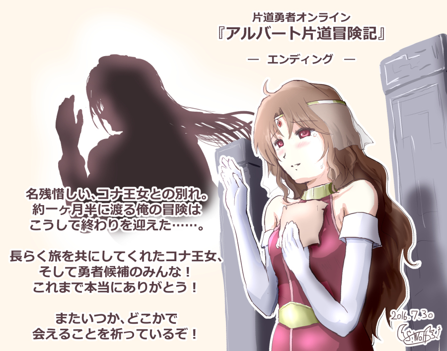
{kind=link}
| 【アルバートから最後に一言】
これまで俺の冒険の記録を読んでくれたみんな、本当にありがとう！ 40日以上に渡った『片道勇者オンライン』の冒険も、これで本当に最後だ。またいつか会える日を楽しみに待っているぞ！
それではみんな、元気でな！ |
【物語は続く……】
| 【アルバートから一言】
……と、華麗に別れの言葉を決めてみたが、俺が行き着いた先はまたもや闇に覆われつつある片道の世界だったのだ！
そう、俺がたどりついたのは『ケモミミ王国』と呼ばれる国――そこで出会ったのは『ウルファ』という名の半獣人の女王だった。 彼女の使命を引き継いで転生した俺は、三度、勇者として世界を救う旅に出ることになる。今度は頼りになる旅の仲間と共にだ！ 『片道勇者TRPGアペンド』のリプレイで繰り広げられる俺の新たな冒険、気になる者はぜひ読んでみてくれ！ |
↓
| 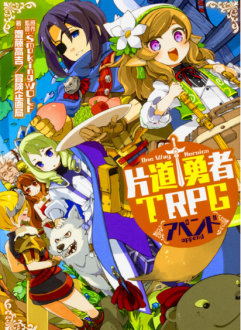 |
【片道勇者ＴＲＰＧアペンド】 Amazonページへ（税込1728円） 『片道勇者TRPGアペンド』は 『片道勇者TRPG』の3巻目！ 原作のデイリーキャンペーンワールドを 再現したクエストなどが収録され、 単発プレイも楽しみやすくなるサプリメントです！ 今回はリプレイパート多めなので、 冒険の風景を見るのが好きな人にも おすすめの一作！ |
Copyright(C) SmokingWOLF All rights reserved